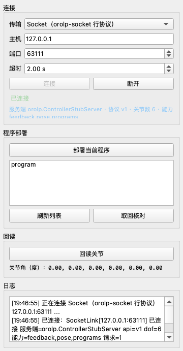
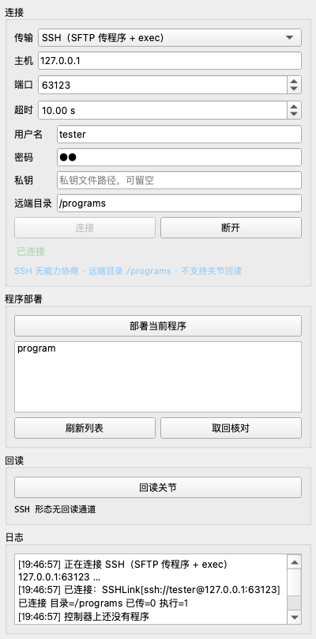
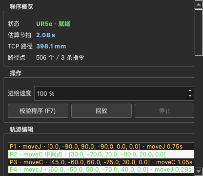
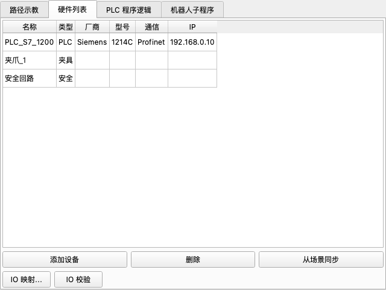
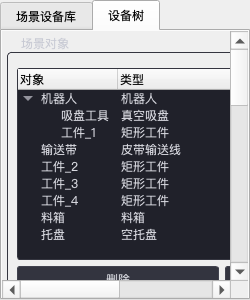
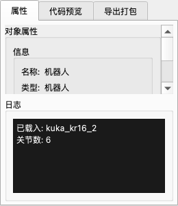
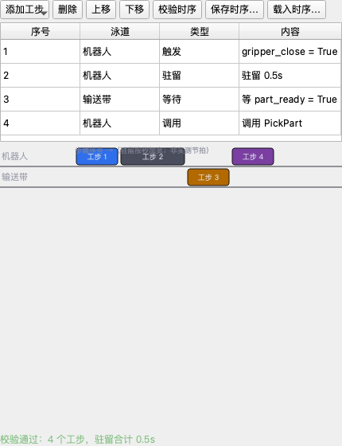
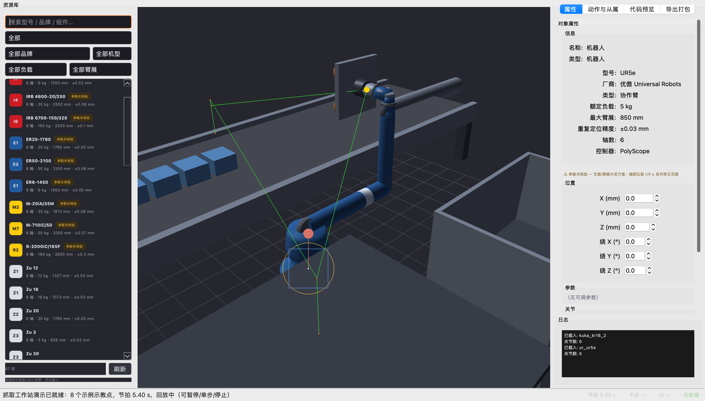
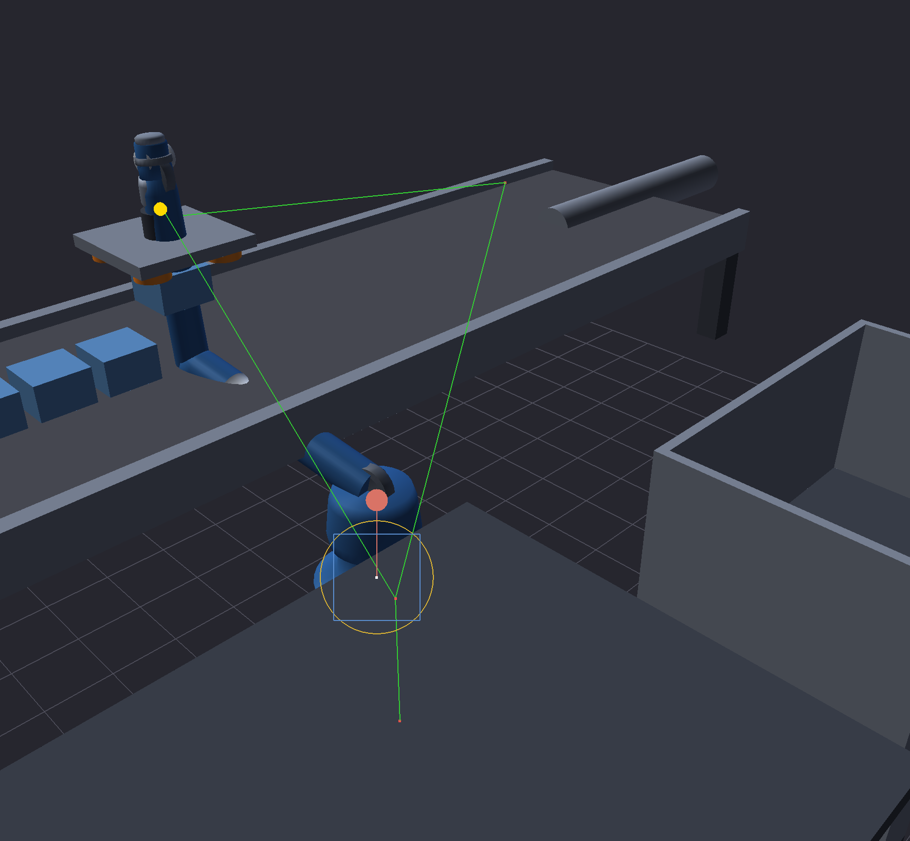
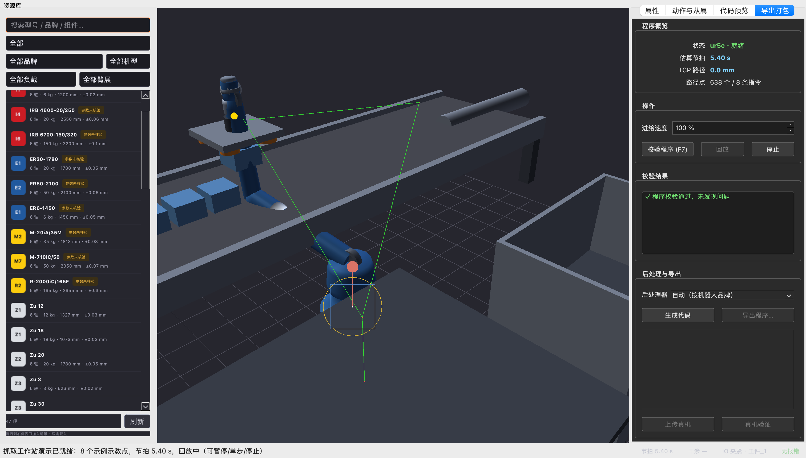

节拍数据（真实仿真输出）
工作站布局（俯视示意）
机器人基座在原点；布局坐标与 orolp.world.templates 中 1:1 一致，加载模板即可在 GUI 中得到同款场景。
TCP 轨迹动画（抓取 → 搬运 → 落件 → 返回）
黄色点为 TCP；蓝色块为被吸盘抓住的工件（抓取后随动、落件后留在托盘）——与 GUI 回放逻辑同款行为。
抓取随动动画（S3 已落地 · GUI 与离线脚本共用一份语义）
程序执行到 gripper("close") 的时刻，工件吸附到法兰并随 TCP 随动（吸附瞬间世界位姿不变）；执行 gripper("open") 后工件原地留在落件位姿。
orolp.world.animation：把夹爪 IO 指令映射到轨迹时间轴（GraspAnimator，无头可测，GUI 与脚本共用）- 离线编程面板：插补回放越过抓取/释放事件时自动驱动场景工件挂载/解除
- 示教点标记为「抓取点/放置点」后，程序自动插入
gripper()指令——回放动画与品牌出码共用同一份抓取时序 - 测试基线 1684 passed（含 14 个抓取动画专项测试）
GUI 一键演示（S4 已落地 · 菜单一键到动画）
app.py「文件 → 抓取工作站演示（一键）」：构建模板场景 → 视口载入 UR5e → IK 生成五点式抓取循环示例程序（orolp.world.demo，无头可测）→ 自动校验显示节拍 → 自动开始回放，工件吸附/释放全程随动。
- 示例示教点带工艺语义（接近/抓取/提升/落件/撤离），回放动画与品牌出码共用同一份抓取时序
- 布局经过可达性校准：全部示教位姿对 UR5e 模型留 ≥27mm 距离余量（IK 有解才有演示）
- 测试基线 1684 passed（含 12 个一键演示专项测试）
品牌机器人代码（真实后处理输出，含夹爪 IO）
# --- UR · URScript ---
def GRASP_DEMO():
# RobotWorld v0.1.0 generated URScript
# Robot: UR5e
movej([0.0000, -1.5708, 1.5708, -1.5708, 1.5708, 0.0000], a=1.20, v=0.0800, r=0.0000)
movel(p[0.0600, -0.4000, 0.4280, 3.1416, 0.0000, 0.0000], a=1.20, v=0.1000, r=0.0000)
movel(p[0.0600, -0.4000, 0.3280, 3.1416, 0.0000, 0.0000], a=1.20, v=0.0400, r=0.0000)
set_digital_out(0, False)
set_digital_out(1, True)
wait_digital_in(3, True) # TODO: 超时 2.00s 需自行实现看门狗
movel(p[0.0600, -0.4000, 0.4280, 3.1416, 0.0000, 0.0000], a=1.20, v=0.0800, r=0.0000)
movel(p[0.3500, 0.4500, 0.3540, 3.1416, 0.0000, 0.0000], a=1.40, v=0.3500, r=0.0000)
movel(p[0.3500, 0.4500, 0.2040, 3.1416, 0.0000, 0.0000], a=1.20, v=0.0400, r=0.0000)
set_digital_out(1, False)
set_digital_out(0, True)
movel(p[0.3500, 0.4500, 0.3540, 3.1416, 0.0000, 0.0000], a=1.20, v=0.0800, r=0.0000)
movej([0.0000, -1.5708, 1.5708, -1.5708, 1.5708, 0.0000], a=1.20, v=0.0800, r=0.0000)
end
# --- KUKA · KRC4 KRL ---
&ACCESS RVP
&REL 1
DEF GRASP_DEMO()
; Generated by RobotWorld v0.1.0
; Robot: UR5e
BAS(#INITMOV, 0)
PTP 0.000, -90.000, 90.000, -90.000, 90.000, 0.000
LIN 60.000, -400.000, 428.000, 180.000, -0.000, 0.000
LIN 60.000, -400.000, 328.000, 180.000, -0.000, 0.000
$OUT[0] = FALSE
$OUT[1] = TRUE
WAIT FOR $IN[3] ; TODO: 超时 2.00s 需用 $TIMER 自行实现
LIN 60.000, -400.000, 428.000, 180.000, -0.000, 0.000
$VEL.CP = 0.350
$ACC.CP = 1.400
LIN 350.000, 450.000, 354.000, 180.000, -0.000, 0.000
LIN 350.000, 450.000, 204.000, 180.000, -0.000, 0.000
$OUT[1] = FALSE
$OUT[0] = TRUE
LIN 350.000, 450.000, 354.000, 180.000, -0.000, 0.000
PTP 0.000, -90.000, 90.000, -90.000, 90.000, 0.000
END
# --- ABB · RAPID ---
MODULE GRASP_DEMO
! Generated by RobotWorld v0.1.0
! Robot: UR5e
PROC main()
MoveJ [0.000, -90.000, 90.000, -90.000, 90.000, 0.000], v80, fine, tool0;
MoveL [60.000, -400.000, 428.000, 180.000, -0.000, 0.000], v100, fine, tool0;
MoveL [60.000, -400.000, 328.000, 180.000, -0.000, 0.000], v40, fine, tool0;
SetDO gripper_open, 0; ! Q0.0
SetDO gripper_close, 1; ! Q0.1
WaitDI clamped, 1 \MaxTime:=2.000; ! I0.3
MoveL [60.000, -400.000, 428.000, 180.000, -0.000, 0.000], v80, fine, tool0;
MoveL [350.000, 450.000, 354.000, 180.000, -0.000, 0.000], v350, fine, tool0;
MoveL [350.000, 450.000, 204.000, 180.000, -0.000, 0.000], v40, fine, tool0;
SetDO gripper_close, 0; ! Q0.1
SetDO gripper_open, 1; ! Q0.0
MoveL [350.000, 450.000, 354.000, 180.000, -0.000, 0.000], v80, fine, tool0;
MoveJ [0.000, -90.000, 90.000, -90.000, 90.000, 0.000], v80, fine, tool0;
ENDPROC
ENDMODULE
# --- FANUC · TP ---
/PROG GRASP_DEMO
/ATTR
COMMENT = "RobotWorld v0.1.0";
/MN
J 0.00, -90.00, 90.00, -90.00, 90.00, 0.00 80% FINE ;
L 60.00, -400.00, 428.00, 180.00, -0.00, 0.00 100mm/sec FINE ;
L 60.00, -400.00, 328.00, 180.00, -0.00, 0.00 40mm/sec FINE ;
DO[0]=OFF
DO[1]=ON
WAIT DI[3]=ON ! TODO: 超时 2.00s 需用 SKIP 条件实现
L 60.00, -400.00, 428.00, 180.00, -0.00, 0.00 80mm/sec FINE ;
L 350.00, 450.00, 354.00, 180.00, -0.00, 0.00 350mm/sec FINE ;
L 350.00, 450.00, 204.00, 180.00, -0.00, 0.00 40mm/sec FINE ;
DO[1]=OFF
DO[0]=ON
L 350.00, 450.00, 354.00, 180.00, -0.00, 0.00 80mm/sec FINE ;
J 0.00, -90.00, 90.00, -90.00, 90.00, 0.00 80% FINE ;
/POS
/END
碰撞检测（v0.2.1 新能力）
- 连杆级定位：不再只说"机器人撞了托盘"——命中结果精确到 哪个连杆（如 forearm）、哪个零件、首次发生时刻与指令序号（撞在哪一段轨迹）
- 自碰撞检查：连杆-连杆干涉（关节直连对与 fixed 刚体组自动豁免），抓出"机器人拧成麻花"类干涉
- 包围体层次：连杆/对象联合 AABB 广相 → SAT 窄相，几百个采样点的整轨检查保持秒级
- GUI 标红：校验检出干涉时，视口把涉事连杆与物体以红色线框高亮
- 奇异软预警：复用雅可比条件数（与规划器同一标准），接近奇异位形时给警告级提示
速度/加速度规划 + 节拍报表（v0.2.2 新能力）
- 真实速度曲线：moveJ/moveL 路径点按 梯形/S 曲线（cosine 缓动）推进——起停速度归零、加速度受轴限位约束，不再是"全程匀速的假节拍"
- 两种曲线可切换：
TrajectoryPlanner(profile="trapezoid"|"scurve")——本页演示程序梯形节拍 8.9s，S 曲线节拍 10.1s（起停更柔和、节拍略长） - 动力学数据：
Waypoint.velocity / acceleration首次真实填充（时间戳差分），可供动力学校验与数字孪生消费 - 节拍报表：校验报告按指令输出耗时明细与占比（节拍大头一眼可见，报价有据）
- 品牌出码带 VEL/ACC：
Motion.velocity/acceleration覆盖值进入 URv=/a=、KUKA$VEL.CP/$ACC.CP、ABBv-num、FANUCmm/sec
GUI 轨迹编辑器（v0.2.4 新能力）
- 路点直接编辑：离线编程面板内插入（复制源点）/删除/上下移，双击或对话框手填逐关节角度（度）——改完重新校验即见新节拍
- 逐点运动类型：moveJ / moveL 一键切换；moveL 按示教点 FK 位姿走直线插补（规划器沿路逐点逆解，中途不可达会精确报出在哪一段）
- 实时着色：校验后路点按问题级别着色——错误红 / 警告橙 / 正常绿，每行携带该指令的节拍耗时
- 一键导出：不先"生成代码"也能一步构建 + 按品牌扩展名落盘（UR
.script/ KUKA.src/ ABB.mod…），附 manifest 部署清单 - 双向同步：面板改动经
taughtPointsChanged信号回写路径代码编辑器，两条编辑通路永远共享同一份示教点数据
动力学 / 力矩校验（v0.3.1 新能力）
运动学回答"能不能到"，动力学回答"到了关节扛不扛得住"。orolp.dynamics 用牛顿-欧拉逆动力学逐路点计算关节力矩与机械功率，超额定直接报错、GUI 路点行标红。
- 惯性参数双轨：URDF
<inertial>自动解析（CAD 导出轨道）+set_link_inertial手动录入（手册轨道）+set_payload末端负载（平行轴定理合并） - 真实物理：含重力、离心/科氏项与连杆惯性张量；单摆解析值、负载 Δτ=JᵀF、质量矩阵对称性三重交叉验证
- 超限三色：峰值超额定 → 错误红（程序校验不通过）；达 85% → 警告橙；缺惯性参数只提示跳过，不阻塞其余校验
- 力矩/功率报表：逐轴峰值/额定力矩表 + 机械功率峰值/均值，进校验报告
format() - 测试基线 1684 passed（含 19 个动力学专项测试）
实测样例：SO101 桌面臂（URDF 自带惯性参数）两段 moveJ 程序，校验输出逐轴力矩（N·m）：
| 关节 | 峰值力矩 | 额定 | 利用率 |
|---|---|---|---|
| 轴 1 | 0.043 | 100 | 0.0% |
| 轴 2 | 0.186 | 100 | 0.2% |
| 轴 3 | 0.129 | 100 | 0.1% |
| 轴 4 | 0.079 | 100 | 0.1% |
| 轴 5 | 0.003 | 100 | 0.0% |
| 轴 6 | 0.006 | 100 | 0.0% |
机械功率峰值 0.25 W（平均 0.16 W）——功率数据同时可供驱动器选型与能耗估算参考。
STEP/CAM 轨迹生成（v0.3.2 新能力）
CAD 模型直接变焊缝程序：orolp.cam 从 STEP/IGES 提取边与焊缝链，自动生成 moveL/moveC 路径，并用扫描点云比对实际偏差。下方数据全部来自真实管线（OpenCASCADE 整圆焊缝 → UR5e 校验 → URScript 出码）。
- 焊缝提取：拓扑边离散（弦高容差可控）→ 端点共点串链 → 闭合回路独立成链（整圆焊缝完整保留）；按长度 / 闭合 / 序号筛选
- 路径 → 程序：转角检测 + 平滑段 moveC 按累计转角 ≤120° 分片（规避控制器整圆限制）+ 转角/短段 moveL；闭合路径环形分段自动回起点；
z_lift沿法向抬高 + 固定焊炬姿态 - 扫描偏差：PLY 点云（ASCII/二进制）对规划路径逐点距离 → max / mean / rms + 最差点定位
- CLI：
python3 tools/cam_path.py seams|path|deviation …，path 模式直达品牌代码
实测样例：Ø50mm 圆柱顶面整圆焊缝（51 点、周长 157 mm）→ UR5e 程序 4 条指令、节拍 2.87 s、校验 0 错误；URScript 出码（节选 movec 圆弧段）：
def CAM_CIRCLE():
# RobotWorld v0.1.0 generated URScript
# Robot: UR5e
movel(p[0.4250, 0.2000, 0.3420, 0.0000, 3.1416, 0.0000], a=1.20, v=0.0300, r=0.0000)
movec(p[0.4134, 0.2211, 0.3420, 0.0000, 3.1416, 0.0000], p[0.3866, 0.2211, 0.3420, 0.0000, 3.1416, 0.0000], a=1.20, v=0.0300, r=0.0010)
movec(p[0.3750, 0.2000, 0.3420, 0.0000, 3.1416, 0.0000], p[0.3894, 0.1774, 0.3420, 0.0000, 3.1416, 0.0000], a=1.20, v=0.0300, r=0.0010)
movec(p[0.4134, 0.1789, 0.3420, 0.0000, 3.1416, 0.0000], p[0.4250, 0.2000, 0.3420, 0.0000, 3.1416, 0.0000], a=1.20, v=0.0300, r=0.0010)
end扫描偏差比对：51 点模拟点云（整体偏 0.4mm）→ max 0.40 mm / mean 0.40 mm / rms 0.40 mm，最差点自动定位。
焊接 / 喷涂工艺模板库（v0.3.3 新能力）
工艺参数做成可配置模板：程序里只写 arc_start("my_weld")，换工艺改模板参数、程序一行不动。支持 YAML 覆盖内置默认（电流/电压/送丝/保护气/预流后流/起弧反馈超时；喷涂流量/扇幅/雾化压力）。
- 一等工艺指令：链式
arc_start / arc_end / spray_on / spray_off，与运动指令同源混排，对轨迹规划/节拍完全透明 - 品牌出码：FANUC 出原生
ARCON AC=… V=…/ARCOFF（含送丝/预流后流注释）；UR / KUKA / ABB 降级为 SetDO 语法 + 工艺参数注释，下装前人工核对 - waitDI 完整语义：
trigger支持 level / rising / falling 边沿触发；无原生边沿指令的品牌强制留 TODO 注释，绝不静默按电平输出
实测样例（同一份焊接程序，KR16 校验 0 错误）——FANUC TP 原生焊接指令：
ARCON AC=150 V=19.0 ! 送丝 6.0m/min
! 焊接 电流150A 电压19.0V 送丝6.0m/min 保护气15L/min 预流0.3s 后流1.0s（起弧前预流 0.3s）
ARCOFF ! 熄弧后保护气滞流 1.0s
WAIT DI[0]=ON ! TODO: 超时 5.00s 需用 SKIP 条件实现 ! TODO: 原语义为 rising 边沿触发，需条件监控实现，当前按电平输出，请人工核对URScript 降级形态（置位信号 + 参数注释）：
set_digital_out(3, True) # 起弧前保护气预流 0.3s
# 焊接 电流150A 电压19.0V 送丝6.0m/min 保护气15L/min 预流0.3s 后流1.0s
set_digital_out(4, False) # 熄弧后保护气滞流 1.0s标定与手眼视觉（v0.3.4 新能力 · 相机触发抓取）
相机看到工件之后，机器人凭什么知道去哪抓？中间隔着四道"真实世界"的换算：TCP 标定（吸盘中心在哪）、托盘坐标系 3 点法（工件摆在哪）、手眼标定（相机在机器人的什么位置）、像素 → 抓取位姿（图像坐标怎么变成机器人目标）。orolp.calibration 把这四步做成可计算、可校验、可落盘的能力——每一步都给误差，不给出"看着像对"的数。
实测数据（python examples/vision_pick_demo.py 真实跑出，含 0.2px 像素噪声与 0.15mm/0.03° 手眼采集噪声）：
| 环节 | 实测结果 |
|---|---|
| TCP 4 点法（位置） | 真值 (2.6, -1.4, 78.9) mm → 标定 (2.60, -1.40, 78.90) mm，误差 1.34e-14 mm，残差 0.0000 mm（合格） |
| TCP 6 点法（姿态） | 沿工具 +X / +Z 各碰一点解出方向，姿态误差 2.10e-14° |
| 托盘坐标系 3 点法 | 原点误差 0.00e+00 mm / 姿态 3.13e-15°（托盘还转了 15°，落件点按托盘局部坐标算） |
| 手眼标定（eye-to-hand） | 5 段有效运动（腕部绕不同方向转），外参误差 0.668 mm / 0.0242°，方程残差 0.415 mm |
| 视觉 → 抓取位姿 | 检测像素 (1159.6, 360.1) → 抓取点 (390.6, -400.2, 328.0) mm，定位误差 0.628 mm（含标定误差 + 像素噪声） |
| 程序与校验 | 8 条指令 / 节拍 9.71 s / 校验错误 0 条 |
标定结果随程序出码写入头部注释（下装前现场核对用，真实输出）：
# 标定集 grasping_workstation（2026-09-16T19:46:45）
# TCP(6point) 偏移 = (2.60, -1.40, 78.90) mm / RPY (-0.00, 0.00, 2.50)°，残差 max 0.000 mm（4 点 + 2 方向点，合格）
# 用户坐标系[托盘坐标系] = (350.00, 450.00, 144.00) mm / RPY (0.00, 0.00, 15.00)°
# 手眼标定(eye-to-hand) 相机在基座系 = (0.2, -400.2, 1100.6) mm / RPY (180.00, -0.01, 0.02)°，5 段运动，残差 0.415 mm / 0.0699°
# 相机内参 fx=1108.5 fy=1108.5 主点=(640.0, 360.0) 1280×720
# 备注：vision_pick_demo：像素噪声 0.2px，手眼噪声 0.15mm/0.03°
# RobotWorld v0.1.0 generated URScript- 不给出不可信的答案：4 点法姿态差异不足、手眼运动全绕同一根轴、模式传错（
eye_in_hand/eye_to_hand的 B 互为逆）——一律显式报错并说明怎么改动作，绝不沉默地给个数 - 写回仿真：
CalibrationSet.apply_to_robot()灌 TCP/基座，write_urdf()把标定 TCP 写进 URDF 副本（沿用已有的tcp关节原地更新，工具几何不丢；重复写幂等） - 一条命令可复现：
python examples/vision_pick_demo.py [--noise 1.0]，噪声放大即见精度退化 - 新增 35 个标定专项测试（含"必须报错"的负例与 FK 一致性数值校验）
多机器人协同（v1.0.1 新能力 · 两台机器人共用一条时间轴）
两台机器人各跑各的程序，单看每一台都"校验通过"，放到一起却可能撞——这类问题只存在于时间轴上：一台在取件时另一台正伸过同一片空间，或者一台待机位形恰好挡在别人的路径上。orolp.multirobot 把 N 条轨迹排到同一条时间轴上按固定步长采样，分别检查机器人-机器人干涉（含最近连杆对与最小间距）与机器人-环境干涉（待机位形不隐身——A 在等 B 的时候，A 就停在轨迹端点，那也是真实位姿）。
机器人A 从左侧取件台取件 → 放到中间的共享交接点；机器人B 从交接点取走 → 放到右侧出料台。两条轨迹穿过同一片空间，却在时间上前后错开——这正是多机器人现场最典型的隐患。图中坐标取自示例脚本的真实常量。
节拍统筹实测（同一批作业、同一组轨迹，只改判据）：
| 排法 | 总节拍 | 机器人之间 | 说明 |
|---|---|---|---|
| 同刻齐发 · 净空 0 | 8.67 s | 0 处 | 严格口径"没撞"——但最近处仅 +22.9 mm（机器人A:link_5 ↔ 机器人B:link_4 @ t=4.43s），现场这叫擦肩 |
| 同刻齐发 · 净空 60mm | 8.67 s | 17 处近失 | 换成"敢不敢跑"的判据，同一组轨迹立刻不合格 |
| 串行 | 15.96 s | 0 处 | 一定安全，但最慢（两机节拍相加） |
| 贪心错峰 · 净空 60mm | 12.67 s | 0 处 | 把 机器人B 推迟 4.00 s，近失清零；仍比串行省 21% |
- 共享场景：
Scene.add_robot()让多台机器人各有独立基座位姿、关节值与运动学链；旧的单机器人属性（scene.robot/scene.joints…）以属性代理落在主机器人上，既有的代码与场景 JSON 一行都不用改 - 互避碰：
CollisionChecker.check_robot_pair()直接给"最近连杆对 + 最小间距"（球-球用解析式、其余取顶点云最近距离）；挂载在机器人身上的夹爪只对它自己那台豁免，不会连人带工具一起放行 - 四种排法：
parallel（全从 0 起，体检用）/serial（串行）/stagger（指定偏移）/greedy（逐台找最早无冲突起点，max_wait限最大等待） - 净空即判据：
clearance把"擦着过"也算问题——上表说明同一组轨迹在 0mm 与 60mm 两个口径下的结论完全相反，所以"0 处干涉"从来不该被读成"两机永远不会靠近" - 包络接触容差：干涉检查用的是 URDF
<collision>里的厂商简化包络体（比真机胖），浅穿透属模型误差而非撞机，故引入ENVELOPE_TOLERANCE_MM = 20mm并在报告里显式披露放行了几处（本页两台机器人各 7 / 4 处） - 一条命令可复现：
python examples/multi_robot_cell_demo.py [--json out.json]；新增 48 个多机器人专项测试（含"必须错峰"的判定用例与"深穿透不得被容差放行"的反例）
另有机器人-环境包络触碰 3 处（由单机轨迹决定，错峰消不掉，只能改轨迹或改布局）——这也是本页不把"0 处机器人干涉"说成"绝对安全"的原因。
力控柔顺（v1.0.2 新能力 · 恒力打磨 / 贴面 / 装配的规划与出码）
位置控回答"走到哪"，力控回答"用多大力顶着走"。orolp.compliance 把力控里该先算的数一次算清——再按品牌出码（UR 原生 force_mode()，其余品牌诚实降级、绝不臆造语法）。
UR 原生出码样例（同一程序 · 单位已全部换算为 m / rad / N——直接可在 Polyscope 加载）：
force_mode([0.00000, 0.00000, 0.00000, 0.00000, 0.00000, 0.00000], [0, 0, 1, 0, 0, 0], [0.00000, 0.00000, -30.00000, 0.00000, 0.00000, 0.00000], 2, [0.01000, 0.01000, 0.10000, 0.08727, 0.08727, 0.08727])
end_force_mode()- 阻抗 / 导纳一对偶：
simulate_admittance（力→位移，半隐式欧拉）与predict_contact_force（位移→力）共用同一套二阶系统参数，数值积分与解析阶跃响应双算法互相验证 - 程序里是一等指令：
prog.force_mode(spec)/prog.force_mode_end()与运动混排，对规划与节拍完全透明；校验时逐条体检力控参数并检查起止配对（多余的 end 报错、程序结束仍在力控给警告） - 出码不臆造语法：UR 原生
force_mode(task_frame, selection_vector, wrench, type, limits)；ABBFCRefForce/FCAct/FCDeact（RobotWare 选件，附人工核对 TODO）；KUKA/FANUC 拿不到权威手册，只输出参数 + TODO——宁可让人补一行，不给一行假代码 - 关节扛不扛得住：
check_force_capacity把接触力经 τ=JᵀF 叠加到重力矩上再比额定力矩——同一个 30N，臂伸直和收拢需要的关节力矩差数倍 - 一条命令可复现：
tests/test_compliance.py41 个专项测试（含 JᵀF 交叉验证与 UR 单位逐字段核对），全量基线 1684 passed
数字孪生与云协作（v1.0.3 新能力 · 仿真 vs 真机 的偏差闭环）
离线编程的最后一问不是"代码生成没有"，而是"真机跑出来和我想的一样吗"。orolp.twinsync 把 DebugSession.deviation 的逐时刻偏差采样成时间序列，把两条来自不同源的轨迹按时间对齐后做差分，并且——最关键——把偏差拆成"标定"与"伺服"两部分：低速/停点段还剩下的偏差与伺服无关（只可能来自零位、传动比、连杆尺寸、工具坐标），高速段多出来的那部分才是位置环带宽不够。两者处理方式完全不同，改错方向等于白干。
⚠️ 本页没有真机：真机侧是 PlantModel 合成传动误差模型（零位偏置 / 传动比误差 / 编码器噪声 / 一阶伺服滞后，按物理规律作用），所有真机轨迹都标 source=plant。它的用途是验证整条孪生链路、以及标定"偏差多大该报警"的阈值——不是现场实测数据，不能当验收依据。接真机时把连接换成真机 ControllerLink 实现即可，报告逻辑一行不改。
↑ 同一段抓放轨迹（2238 个采样点 / 8.94s），"真机"参数为正常伺服带宽：偏差几乎全部是随速度变化的跟踪误差。
↑ 只把"真机"参数改成"零点动过 + 减速比标称误差大 + 增益偏低"：偏差整体抬升一个数量级，且连低速段也超标了——这时候再去调伺服增益是白费功夫。
| 口径 | 调好的机器 | 差调机的机器 | 说明 |
|---|---|---|---|
| 位置偏差峰值 | 1.846 mm | 27.250 mm | 同一段轨迹，差别只在真机传动误差参数 |
| 位置偏差均值 / RMS | 1.180 / 1.278 mm | 8.973 / 10.480 mm | 同号跟踪误差会把均值一起抬高 → 别只看均值 |
| 姿态偏差峰值 | 0.374° | 3.643° | 姿态超 0.5° 才需要怀疑工具姿态标定 |
| 低速段峰值（≈标定分量） | 0.162 mm（11 点） | 5.902 mm（11 点） | 关节几乎不动时的残余偏差，伺服不背锅 |
| 高速段峰值（含伺服跟踪） | 1.846 mm | 27.250 mm | 超低速段越多，说明位置环越跟不上 |
| 高速 / 低速倍率 | 11.4× | 4.6× | ≫1 判定为伺服主导；≈1 则两边都要治 |
| 越 1mm 容差样本 | 1605 / 2238 | 2238 / 2238 | 容差由现场工艺给，这里取 1mm 做演示口径 |
| 合成真机参数 | 合成真机模型（零位偏置 0.012°、传动比误差 0.002%、编码器噪声 σ=0.0008°、伺服滞后 τ=0.004s） | 合成真机模型（零位偏置 0.35°、传动比误差 0.08%、编码器噪声 σ=0.01°、伺服滞后 τ=0.02s） | PlantModel 合成模型参数（source=plant） |
成因提示（由 TwinReport.format_causes() 按速度分解与曲线形状自动生成，第二轮的真实输出）：
偏差形状提示（按经验指纹，供排查方向参考）：
常量分量 8.973 mm / 波动分量 5.415 mm / 峰值 27.250 mm
低速段峰值 5.902 mm（11 点，伺服几乎不背锅）｜ 高速段峰值 27.250 mm
· 高速段比低速段高出 4.6 倍 → 主要是**伺服跟踪误差**（降速、加前馈、调位置环增益）。注意此时均值/常量分量也会偏高，但那只是同号跟踪误差抬起来的，**别据此去重新标定**
· 姿态偏差明显 → 工具姿态标定或关节零位，而非纯位置偏置真机上报的关节角回读（比上一版更可信的"实时回显"——因为能查它有多旧）：
0.539 -90.378 90.349 -90.142 89.908 0.361云端轨迹清单（索引单独存 .meta.json，不为"看一眼有哪些轨迹"就下载全部内容）：
| 轨迹 | 来源 | 样本数 | 偏差峰值 |
|---|---|---|---|
GRASP_DEMO | sim | 2238 | 0.012 mm |
GRASP_DEMO_poor | plant | 2238 | 27.250 mm |
GRASP_DEMO_tuned | plant | 2238 | 1.846 mm |
孪生轨迹的 JSONL 上报格式（首行元数据 + 每行一个快照，真机跑一段就能 push 一段）：
{"kind": "robotworld.twin.trace/1", "source": "sim", "robot_name": "", "program_name": "GRASP_DEMO", "created_at": 1789559210.0355358, "samples": 2238, "notes": ""}
{"kind": "sample", "t": 0.0, "planned_q": [0.0, 0.0, 0.0, 0.0, 0.0, 0.0], "actual_q": [0.0, 0.0, 0.0, 0.0, 0.0, 0.0], "planned_pose": [0.0, 0.0, 1097.0, 0.0, 0.0, 0.0], "actual_pose": [0.0, 0.0, 1097.0, 0.0, 0.0, 0.0], "pos_dev_mm": 0.0, "rot_dev_deg": 0.0, "joint_dev_deg": 0.0}
{"kind": "sample", "t": 0.009722221456487629, "planned_q": [0.0, -0.02722222093578813, 0.02722222093578813, -0.02722222093578813, 0.02722222093578813, 0.0], "actual_q": [0.0, -0.02722222093578813, 0.02722222093578813, -0.02722222093578813, 0.02722222093578813, 0.0], "planned_pose": [-0.10072489143683255, -4.040683575122566e-05, 1096.9999356650906, 0.0, 0.027222220935786523, -0.02722222093578813], "actual_pose": [-0.10072489143683255, -4.040683575122566e-05, 1096.9999356650906, 0.0, 0.027222220935786523, -0.02722222093578813], "pos_dev_mm": 0.0, "rot_dev_deg": 0.0, "joint_dev_deg": 0.0}- Deviation 只在一处定义：孪生层不重算偏差，而是逐点驱动
DebugSession采样它的deviation()——位置用欧氏距离、姿态用旋转矩阵夹角，口径全项目统一 - "实时"要能被质疑：
CloudLink.status_age()/is_fresh()让"云端最后一条上报"有多旧是可查的；超龄就该显示"数据过期"，而不是拿旧姿势当真机现状 - 对齐是必需的一步：真机与仿真的时间戳不会严格相等（触发时刻、时钟漂移、控制器插补差异），先按最近邻 + 窗口对齐再差分，否则算出来的"偏差"里混的全是时间错位
- 云端是传输之一，不是特殊路径：
CloudLink与FileLink／SimLink同属ControllerLink抽象；默认传输是文件式对象存储（离线可用、零依赖），换 HTTP/S3 只需实现CloudTransport的四个方法 - 一条命令可复现：
examples/twin_sync_demo.py跑通同一闭环；tests/test_twinsync.py100 个专项测试（含"一阶滞后稳态误差 ≈ τ·ω"的解析核对与严格 JSON 校验），全量基线 1684 passed
插件接口（v1.0.4 新能力 · 不加核心代码也能加品牌/算法/渲染层）
上一节把"真机跑得对不对"补齐了，但还有个更日常的痛：每加一个东西都要改核心仓库。加一个品牌的控制语言得改后处理注册表；真机要换自己的解析解或标定几何得改运动学；现场想看的那条焊缝/那批超差点，只有使用者自己知道要画什么。orolp.plugins 把这三处开放成扩展点——抽象早就在了（post/base.py 的模板 + 格式化钩子、RobotKinematics、覆盖层），缺的只是"从外部挂进来"的入口。
本页运行时按真实通路登记的插件（同一进程内跑的，不是贴图）：
RobotWorld 插件注册表（宿主 API 1.0）
post（1）:
· acme_v2 [post] v1.0.0 · 第三方品牌 ACME-V2（演示） · 需 API 1.x
kinematics（1）:
· acme.calibrated [kinematics] v1.0.0 · 带零位标定偏置的 UR5e 运动学（演示） · 需 API 1.x
renderer（3）:
· acme.broken [renderer] v1.0.0 · 故意做坏的插件（演示失败隔离） · 需 API 1.x
· acme.home_frame [renderer] v1.0.0 · 轨迹起点坐标系（演示） · 需 API 1.x
· acme.tolerance [renderer] v1.0.0 · 超容差点标红（演示） · 需 API 1.x① 后处理插件：加一个仓库里没有的品牌
插件写法与内置品牌完全一致——继承 BasePostProcessor、给 brand/controller、实现 _convert_motion/_get_template。登记之后 program.to_post("acme_v2") 走的是和内置品牌逐字相同的那条路。
// ACME V2 / GRASP_PLUGIN
MOVEJ 0.00, -90.00, 90.00, -90.00, 90.00, 0.00 @ 80% ;
MOVEL 60.00, -400.00, 428.00, -180.00, 0.00, -0.00 @ 100mm/s ;
MOVEL 60.00, -400.00, 328.00, -180.00, 0.00, -0.00 @ 40mm/s ;
MOVEL 60.00, -400.00, 428.00, -180.00, 0.00, -0.00 @ 80mm/s ;
MOVEL 350.00, 450.00, 354.00, -180.00, 0.00, -0.00 @ 350mm/s ;
MOVEL 350.00, 450.00, 204.00, -180.00, 0.00, -0.00 @ 40mm/s ;
MOVEL 350.00, 450.00, 354.00, -180.00, 0.00, -0.00 @ 80mm/s ;
... (共 14 行，完整代码见离线编程导出)② 运动学插件：换求解器，同一个关节读数算出不同的 TCP
演示插件在关节零位上叠了一层标定偏置（真实场景＝用标定过的几何模型替代 URDF 标称尺寸）。Robot(..., kinematics_plugin="acme.calibrated") 之后，规划、校验、回放全部走新求解器。
| 求解器 | 同一组关节读数下的 TCP（mm，Rz 为度） |
|---|---|
| 内置（URDF 标称） | -330.8 -240.1 660.7 |
| 插件（带标定偏置） | -332.1 -239.9 660.5 |
| 两者 TCP 差 | 1.335 mm |
加载时的契约检查（必需成员缺一即拒绝加载，可选成员缺失只记警告——而不是等到运行到一半才炸 AttributeError）：
运动学实现契约通过（dof=6）；接口完整③ 渲染插件：纯数据覆盖层（不碰 OpenGL，所以无头可测）
覆盖层只有三种图元：LineSegments / PointCloud / FrameMarker。宿主把它们喂给视口，测试可以把同一批对象直接断言——同一份插件既能给 GUI 用，也能给网页/报告导出。下面是本节真实收集到的图元：把规划出的 2238 个关节读数分别喂给两个求解器。注意换了求解器之后连规划点数都变了（2238 vs 2238，IK 解不同 → 重采样点不同），所以两条轨迹根本不能按索引硬配——把同一组读数喂给两边才比得干净。参考轨迹＝URDF 标称几何，容差 1mm。
| 插件 | 图元 | 内容 |
|---|---|---|
| acme.home_frame | 起点坐标系 | 位姿 -1.7 0.0 1097.0 |
| acme.tolerance | 整条 TCP 轨迹 | 2238 点 · 色 rgb(0.35, 0.75, 1.0) |
| acme.tolerance | 超容差点云 | 2238 点 · 色 rgb(1.0, 0.25, 0.25) |
| acme.tolerance | 最差点标记线 | 1 条 · 线宽 3.0 |
④ 失败隔离：装了坏插件，软件照样能开
这一节故意注册了一个 overlays() 必然抛错的插件。这不是"演示容错"，而是第三方生态的前提条件：用户装了一个坏插件就再也打不开软件，等于把整个软件判了死刑。
坏插件 acme.broken 被隔离 —— overlays() 抛错：插件依赖的厂商 SDK 没装
→ 结果：其余 4 个图元照常产出（4 个图元 / 1 个插件出错）⑤ 正式分发：以包的形式声明入口点
[project.entry-points."orolp.plugins"]
acme_v2 = "acme_orolp.plugin:post_processor_spec"
# acme_orolp/plugin.py
from orolp.plugins import PluginSpec
post_processor_spec = PluginSpec(
name="acme_v2", kind="post",
factory="acme_orolp.post:AcmeV2PostProcessor",
version="1.0.0", description="ACME-V2 控制语言",
)- 延迟加载：
register_*只登记元信息，工厂到create()才调用；工厂写成"module:attr"时连模块导入都推迟到那一刻——插件可以依赖 PySide6 / OpenGL / 厂商 SDK，而import orolp不能因此变重或失败 - API 版本显式声明：规则只有一条，主版本号必须相等（
1.2与1.5兼容，1.x与2.x不兼容）。刻意选最可解释的规则——宁可偶尔多拒一个其实能跑的插件，也不要让"悄悄按新语义跑出错误轨迹"发生在工业软件里 - 契约显式校验：运动学插件加载时先查必需成员，缺了就拒；缺可选项只记一条警告（聚合成 1 条，不是每个成员刷 1 条），并且相关功能会明确提示而不是运行到一半崩
- 演示诚实性：本节所有数字都来自本页生成时真实跑过的注册与调用；没有真的第三方包被安装（入口点扫描结果如实显示"发现 0 个"），所以插件是用
register_*直接登记的——这正是同一个注册表 - 一条命令可复现：
examples/plugins_demo.py跑通三个扩展点；tests/test_plugins.py127 个专项测试（含"登记阶段绝不 import 插件模块"的标记文件验证、坏插件隔离、入口点加载失败隔离），全量基线 1684 passed
真机连接（v1.0.5 新能力 · 从"落盘 / 仿真"到"真的发到控制器上"）
前几节把"算得对不对"补齐了，但离线编程的最后一公里一直是空的：ControllerLink 抽象早就有了，落地形态却只有两种离线的——FileLink（把代码写进目录）和 SimLink（进程内运动学假装成控制器）。于是"仿真 vs 真机偏差闭环"（v1.0.3）只能拿合成模型当对手。SocketLink 补上第一种真机形态：TCP + 一问一答的单行 JSON 协议。现场控制器五花八门（UR / FANUC / KUKA / 汇川 / 自研），共同点只有"有个网口"——把传输收敛成一条行协议后，控制器侧只要一小段转发，上层（deploy / debug / 孪生）一行都不用改。
① 本页生成时真开了一个回环控制器，客户端走的是真 TCP
下面这行状态不是贴图，是本页构建时 SocketLink.connect() 握手后返回的自省结果（地址里的端口由系统分配，每次构建都不同）：
SocketLink[127.0.0.1:63057] 已连接 服务端=orolp.ControllerStubServer api=v1 dof=6 能力=feedback,pose,programs 请求=1feedback 就如实返回 None，绝不伪造"实际位置"）② 部署 → 清单 → 取回核对
program.deploy(link, "ur_polyscope") 生成的代码经 base64 过线（换行、中文注释、各家控制语言的引号转义都不再是问题）；再 fetch_program() 取回原文——"上传的到底是不是我发的那份"必须能核对，而不是祈祷。
list_programs()句柄：sock://127.0.0.1:63057/programs/socket_pick.script
控制器侧收到的清单 meta：{"post_processor": "ur_polyscope", "robot_name": "UR5e", "brand": "ur", "ext": "script"}③ 逐点下发（时刻也过线）+ 回读实际位置
把 DebugSession 直接接在真机连接上：每个规划点一条 set_joints，并带上该点在程序时间轴上的时刻（签名探测，老连接行为不变）；回读走 read_joints / get_pose。下面的"偏差"是规划值 vs 控制器回读值（单一来源口径）。
线上 op 序列（打桩服务端留档）：hello, upload, list, fetch, set_joints, read_joints … read_joints, get_pose, bye④ 偏差曲线：仿真 vs 经网络回读的"真机"
孪生层一行没改——把控制器换成 SocketLink 之后，capture_from_session 拿到的偏差就是线上回读产生的。下图由 compare_traces（最近邻 + 窗口对齐后再差分）与 deviation_chart_svg 生成：仿真侧 0.011mm 只是数值噪声，线上侧 7.550mm 是"控制器报回来的位置和规划不一样"，跨源差分峰值 7.550mm（均值 4.442mm / 姿态 1.296°），越 1mm 容差 141 个样本。
⑤ 线上对话原文（不是示意图，是留档的往返报文）
程序正文只留规模、长数组只留前几项——验收要看的是"发了什么 op、带了什么标量"：
| op | 请求（客户端 → 控制器） | 响应（控制器 → 客户端） |
|---|---|---|
| get_pose | {"op": "get_pose"} | {"ok": true, "pose": [-165.9085234239098, -484.7631117984758, 489.9763013866782, "…共 6 项"]} |
| read_joints | {"op": "read_joints"} | {"ok": true, "joints": [52.51317685494072, -87.9553715519315, 81.47678143409736, "…共 6 项"]} |
| get_pose | {"op": "get_pose"} | {"ok": true, "pose": [-165.9085234239098, -484.7631117984758, 489.9763013866782, "…共 6 项"]} |
| read_joints | {"op": "read_joints"} | {"ok": true, "joints": [0.2842437183612713, -89.8280421205032, 90.32129825788819, "…共 6 项"]} |
| get_pose | {"op": "get_pose"} | {"ok": true, "pose": [-386.49881294666005, -180.9159699891789, 527.1465770575459, "…共 6 项"]} |
| bye | {"op": "bye"} | {"ok": true, "closing": true} |
⑥ 链路上出岔子会怎样：两类失败语义刻意不同
这是这一层最容易糊弄过去、也最要命的地方。网络 / 协议级故障（连不上、超时、乱码、对端撂断、响应缺 ok）必须抛错并把连接标记为断开、关掉 socket——把一条已经断了的链路继续留在 connected=True，比报错糟糕得多；而服务端业务性拒绝（ok:false，比如程序名写错、关节数不符）只抛异常、不断开会话，一次笔误不该废掉一台机器的会话。下表是本页构建时逐条真跑出来的：
| 故障注入 | 客户端报错 | 连接状态 |
|---|---|---|
| 没人监听（端口空着） | 127.0.0.1:63059: 连接失败（ConnectionRefusedError: [Errno 61] Connection refused） | 已断开 ✓（承认断了） |
| 对端不是本协议（乱码） | 127.0.0.1:63061: hello 的响应不是合法 JSON：@@not-json@@ | 已断开 ✓（承认断了） |
| 对端撂断（网线被拔） | 127.0.0.1:63063: 连接被对端关闭（读到 EOF） | 已断开 ✓（承认断了） |
| 对端卡死（不回复） | 127.0.0.1:63065: 等待响应超时（0.4s） | 已断开 ✓（承认断了） |
| 业务性拒绝（上传被 ok:false 拒掉） | 打桩服务端拒绝 upload | 已连接 ✓（会话仍在，list_programs() 可用） |
- 没有真机就没有真机：本节所有回读值都来自随包附带的打桩控制器
ControllerStubServer（回读复用 v1.0.3 的PlantLink合成传动误差模型：零位偏置 / 传动比误差 / 编码器噪声 / 伺服一阶滞后）。source="real"只表示"数据经网络从控制器侧回读"，不代表现场实测，不能当验收依据引用——Socket 通路本身也未在真机上验证过 - 接真机要做的只有一件事：在控制器侧准备一段同协议转发（UR 可用 URScript 的
socket_open/read/write写小桩，或由 PC 侧代理进程把厂商 SDK / 原生协议翻译成本协议），然后把SocketLink指向它——孪生层、调试会话、后处理全部无需改动 - 打桩控制器可以自己跑：
python -m orolp.linkstub --port 30002 --urdf models/ur/ur5e/ur5e.urdf，再用SocketLink("127.0.0.1", 30002)连上去；它还支持注入乱码 / 掉线 / 拒答 / 静默四类故障做排障演练（就是上表的来源） - 一条命令可复现：
examples/socket_link_demo.py跑通同一条闭环（含故障演练与线上对话留档）；tests/test_socket_link.py57 个专项测试（含"服务端谎报关节数"必须报错、乱码/掉线/静默四类故障的连接状态、CLI 真实子进程验收），全量基线 1684 passed
HTTP / S3 兼容云协作（v1.0.6 新能力 · 多工位共用一套程序库与轨迹库）
v1.0.5 解决了"连真机"，这一节解决"多台设备共享"：云协作的传输层此前只有进程内与本机目录两种实现，两个工位共用同一套程序库/轨迹库做不到。cloudhttp.py 三件套补上：HTTPCloudStore（REST 客户端，把 CloudTransport 四方法映射成四个 HTTP 请求）、SigV4Signer（AWS Signature V4，零第三方依赖——对接 S3 兼容对象存储时补上它即可）、CloudStoreServer（纯标准库参考服务端，python -m orolp.cloudhttp --root <目录> 即起，本机验收与自建自用两用）。失败语义与 SocketLink 同套路：连不上/5xx 是传输级故障（标记 reachable=False，不让断网被渲染成"云端是空的"）、404 是正常回答（对象缺失→None）、401/403 是配置问题（专门的 CloudAuthError，响亮报错不重试）。
① 本页生成时真起了一个对象存储服务端，两个工位走真 HTTP 共享程序库
工位 A 部署句柄：http://127.0.0.1:63069/robotworld/cellA/programs/PICK_CLOUD.script
工位 B 看到的清单：PICK_CLOUD
部署清单 manifest：{"name": "PICK_CLOUD", "ext": "script", "post_processor": "ur_polyscope", "brand": "UR", "robot_name": "UR5e", "lines": 17, "bytes": 1445, "uploaded_at": 1789559213.174884}② 轨迹库：合成"真机"轨迹上云，另一工位取回做跨源差分
孪生层一行没改——把传输换成 HTTPCloudStore 之后，publish_trace/fetch_trace 走的就是真 HTTP（轨迹抽稀 1/16 → 141 快照上云；JSONL 逐行格式支持现场增量上报）。取回轨迹的 source 保持原样——"经过云端"不改变"数据是不是真机测的"这件事，只追加进附注。
③ SigV4 签名：有外部证据，也有端到端验收
签名核心拆成独立函数（规范请求 → 待签字符串 → 派生密钥），每一环都能单独和 AWS 官方文档给的示例向量对——本页构建时又实算核对了一遍（4 组官方向量逐字符一致 ✓）。参考服务端在 S3 模式下会逐请求复算签名（真实 S3 就是这么校验的）：服务端复算通过，签名 PUT/GET 全链路可用 ✓；换一个错密钥再试：403 拒绝 ✓。诚实披露：签名与 AWS 规则一致有外部证据，但没有连过任何真实云端点——接真云（MinIO / OSS 兼容端点）前请先做一次冒烟。
④ 链路上出岔子会怎样：三类语义刻意不同
| 故障注入 | 客户端回答 | 可达性判定 |
|---|---|---|
| 连不上（端口没人听） | CloudHTTPError（连接被拒 / 超时） | 仍认为可达：否 ✓ |
| 配错桶（服务端 404 + 标记头） | CloudHTTPError（status=404） | 不伪装成「对象缺失」✓ |
| 取不存在的对象（404 = 正常回答） | 返回 None（不是异常） | 仍认为可达：是 ✓ |
| 只读存储上写（403） | CloudAuthError（status=403） | 配置问题要响亮报错，不静默重试 ✓ |
⑤ 服务端请求日志（本页构建时的真实往返留档）
| 时刻 | 方法 | 路径 |
|---|---|---|
| 19:46:53 | PUT | /robotworld/cellA/programs/PICK_CLOUD.script |
| 19:46:53 | PUT | /robotworld/cellA/programs/PICK_CLOUD.manifest.json |
| 19:46:53 | GET | /robotworld?prefix=cellB%2Fprograms |
| 19:46:53 | GET | /robotworld/cellA/traces/PICK_CLOUD.jsonl |
| 19:46:53 | PUT | /robotworld/cellA/status.json |
| 19:46:53 | GET | /robotworld/cellA/status.json |
- 接真云只改一处：把
base_url / bucket / 凭证换成真的（S3 兼容存储再加一个SigV4Signer），CloudLink、孪生层、调试会话、后处理一行不用改 - 自建自用：
python -m orolp.cloudhttp --root /srv/rwcloud --port 8080 --token 顶智令牌就是一个可用的对象存储端点；REST 契约刻意做窄，自己实现一个兼容服务端只要几十行 - 一条命令可复现：
examples/cloud_http_demo.py跑通同一条闭环；tests/test_cloudhttp.py78 个专项测试（AWS 官方 4 组向量逐字符比对、三种传输契约一致性、真并发、CLI 真实子进程验收），全量基线 1684 passed
程序版本对比（v1.0.7 新能力 · 改了哪几条、节拍变多少、TCP 偏了多少）
程序在云端被改过一版——谁改的、改了什么、影响多大？靠"肉眼 diff 出码文本"既看不出节拍变化，也看不出一条 moveL 目标挪了 3mm 到底是工艺修正还是手抖。progdiff.py 把对比做成结构化的：用序列对齐（difflib）把"插入/删除一条指令"与其余指令对齐——不会从插入点开始整体错位报"全变了"；对齐后的每对指令做字段级差异（关节角第几轴 Δ多少度、TCP 变多少 mm/°、IO 什么电平变了）。版本库 ProgramVersionStore 挂在任意 CloudTransport 上（本机目录 / 内存 / v1.0.6 的 HTTP 云端都行），按名自动递增 v1/v2/… 并留 SHA256 指纹。
① 本页构建时在真 HTTP 版本库里存了三版（真规划器参与对比）
② v1 → v2 的结构化差异（现场改动：下探加深 20mm、提速到 70%、插一段中间点、保压加倍）
+ A[—]/B[0] motion：新增指令
~ A[0]/B[1] motion：运动类型 moveJ → moveL
~ A[1]/B[2] motion：speed 50→70；blend 8→0；TCP 101.98mm / 0.00°
~ A[3]/B[4] WaitTime：seconds 0.5→1
~ A[4]/B[5] motion：speed 50→70；TCP 20.00mm / 0.00°
── 汇总 ──────────────────────────────────────────────
相同 1 · 修改 4 · 新增 1 · 删除 0 · 节拍 6.28s→5.88s（Δ-0.40s） · TCP 路径偏移 max 20.00mm③ 规划器口径：节拍变化 + TCP 路径偏移
plan=True 时连规划器一起比）- 口径诚实：结构对比是精确的（字段级、无启发式）；但节拍与 TCP 路径偏移是规划器口径——回答"仿真里会多花多久、路径会偏多少"，不回答"真机上会怎样"
- 读报告注意：起点位姿不同的两版程序会比出"全程大偏移"——那是起点差异不是路径差异；对齐按指令种类序列做，同
setDO/waitDI按信号名对齐 - 与 v1.0.3/v1.0.6 的关系：
Program.deploy把代码送到控制器/云端，版本库存的是可 diff 的结构化版本——同一CloudTransport抽象，HTTP/本机/内存后端行为一致 - 一条命令可复现：
examples/prog_diff_demo.py跑通同一条评审流程；全量基线 1684 passed
第一方示例插件包（v1.0.8 新能力 · 真正可 pip install 的插件）
v1.0.4 的插件接口此前只能用注入的假入口点测——importlib.metadata 的真实发现路径没有被验证过。v1.0.8 把示例里的 ACME-V2 品牌挪成一个独立的、可安装的 Python 包（examples/acme_post_plugin/，自带 pyproject.toml 入口点声明），本页构建时真的执行了 pip install 到临时目录，再让 PluginRegistry.load_entry_points()（不注入任何东西）从真实 dist-info 里发现它、创建它、出码：
// ACME V2 / ACME_PKG // 由第一方示例插件包生成（orolp-plugin-acme-post 1.0.0） DEF ACME_PKG() … MOVEJ 0.00, -90.00, 90.00, -90.00, 90.00, 0.00 @ 50% ; MOVEL 300.00, 0.00, 400.00, -180.00, -0.00, -180.00 @ 100mm/s ; SET_DO(TODO_gripper_close, TRUE) END
- 入口点组：
[project.entry-points."orolp.plugins"]，加载结果是"提供函数"（返回PluginSpec列表）；工厂写成"module:attr"字符串——连插件模块内部都是延迟导入 - 宿主边界：
orolp本体由宿主环境提供，插件包不写进dependencies——插件不绑架宿主的 orolp 版本 - 出码同路：装好后
program.to_post("acme_v2")与内置 7 品牌走完全同一套get_post_processor通路（含 IO 指令的诚实降级警告） - 一条命令可复现：
tests/test_plugin_package.py4 个专项测试（含真 pip install → 真发现 → 真出码的核心验收；先复制再装，pip 就地构建绝不污染源目录），全量基线 1684 passed
包络接触容差 · 逐机器人可配（v1.0.9 新能力）
v1.0.1 的 ENVELOPE_TOLERANCE_MM = 20mm 是全局常量（UR5e 实测标定），但各品牌包络体的"胖瘦"不同。v1.0.9 两件事：①Robot(envelope_tolerance_mm=…) 逐机覆盖——validate(margin=None) 时自动用本机标定值（未标定保持既有默认 −0.5mm，老程序判定结果不变）；②几何下界估算器 estimate_envelope_tolerance_mm(urdf)——逐连杆把 mesh 顶点变换进包络体坐标系切片比较。下面是构建时对各品牌真机 URDF 真跑出来的数字：
| 机型 | 几何下界估算 | 最"胖"的连杆 |
|---|---|---|
| UR5e | 5.8 mm | link_3（5.8 mm） |
| UR10e | 6.4 mm | link_3（6.43 mm） |
| KUKA iiwa7 | 8.6 mm | link_4（8.56 mm） |
| KUKA KR16 | 2.5 mm | link_5（2.55 mm） |
| ABB IRB1600 | 2.3 mm | link_5（2.27 mm） |
| JAKA Zu20 | 6.8 mm | link_3（6.84 mm） |
| SO101（程序生成） | 无可比几何（visual 非 STL mesh） | — |
- 口径诚实：UR5e 估算 5.8mm，而抓取工作站实测最深包络穿透 18.6mm（→ 推荐容差 20mm）——穿透发生在 mesh 凹陷处与姿态相关接触位置，纯几何法测不到。所以估算是下界 + 品牌横向对比工具（谁最需要大容差、最胖连杆在哪），不能替代实测标定；上机取
max(几何下界, 实测值) - SO101 显示"无可比几何"是诚实行为：程序生成 URDF 的 visual 不是 STL mesh，估算器拒绝编数字，调用方应回退全局默认
- 容差不能为负：
Robot(envelope_tolerance_mm=-1)当场 ValueError——容差是放行量，符号写反会把"放行浅穿透"变成"要求重叠才算撞" - 一条命令可复现：
tests/test_envelope.py13 个专项测试（合成 URDF 确定性验证 + float32 边界切片回归 + 逐机解析三态），全量基线 1684 passed
界面语言切换 · i18n（v1.0.10 新能力）
面向开源发布的英文界面：新增 orolp.i18n——tr() 轻量运行时翻译。中文是源语言（默认恒等返回，零回归），英文查目录（未收录原样返回，绝不出现占位符）；语言经 OROLP_LANG 环境变量或 ~/.orolp/language.json 显式配置（不做 locale 自动探测，行为可预期），GUI 菜单「语言 / Language」切换即持久化并提示重启。下表是构建时从目录里取出的真实译文：
| 中文（源语言） | English |
|---|---|
| 删除 | Delete |
| 校验程序 (F7) | Validate (F7) |
| 一键导出… | One-click export… |
| 程序校验与节拍估算 | Program validation & cycle-time estimate |
| 干涉检查 | Interference check |
| ✓ 无干涉 | ✓ No interference |
| 抓取工作站演示（一键）(&D) | Grasping workstation demo (one-click)(&D) |
| 轨迹回放中… | Playing back trajectory… |
| 搜索型号 / 品牌 / 组件… | Search model / brand / component… |
- 目录 812 条（含命名占位符模板），GUI 四文件 499 处文案接线（app.py 267 处 · program_panel.py 92 处 · panel.py 111 处 · panel.py 29 处）
- 语义安全的边界：设备类型等"存储类数据"保持中文存储、只在显示处翻译——
devices_of()按词表过滤的逻辑不受界面语言影响 - 口径诚实：英文模式覆盖 GUI 层全部文案；库层消息（校验 Issue / 报告 / 后处理 TODO 注释）自 v1.1 起接入（见下一节）
- 一条命令可复现：
tests/test_i18n.py16 个专项测试（tr 语义三态 / 配置优先级 / 持久化往返 / en·zh 双模式 offscreen 面板与语言菜单），全量基线 1684 passed
库层消息 i18n（v1.1 新能力）
v1.0.10 只覆盖 GUI 文案；v1.1 把库层运行时消息也接进 tr()——planner 校验 Issue 与报告、后处理器告警、生成代码里的 TODO 注释（下装前现场工程师看到的就是这些）。英文模式下切语言后重跑校验/出码即得英文报告与英文注释。以下是构建时真实跑出的双语对照：
✓ 程序校验通过 指令 2 条 / 路径点 453 个 / TCP 路径 362.0 mm 估算节拍 2.45 s
✓ Program validation passed 2 motions / 453 waypoints / TCP path 362.0 mm Estimated cycle time 2.45 s
/PROG OROLP_PROG
/ATTR
COMMENT = "RobotWorld v0.1.0";
/MN
J 0.00, -90.00, 90.00, -90.00, -90.00, 0.00 100% FINE ;
! TODO: 信号 gripper_closed 地址 TODO_gripper_closed 无法解析为数字量序号，需人工改为 WAIT DI[n] ! TODO: 原语义为 rising 边沿触发，请人工核对
/POS
/END
/PROG OROLP_PROG
/ATTR
COMMENT = "RobotWorld v0.1.0";
/MN
J 0.00, -90.00, 90.00, -90.00, -90.00, 0.00 100% FINE ;
! TODO: signal gripper_closed address TODO_gripper_closed cannot be resolved to a numeric index; change manually to WAIT DI[n] ! TODO: original semantics is rising-edge triggered — verify manually
/POS
/END
| 中文（源语言 / 目录 key） | English |
|---|---|
| ✓ 程序校验通过 | ✓ Program validation passed |
| 估算节拍 {time:.2f} s | Estimated cycle time {time:.2f} s |
| 干涉：{detail} | Collision: {detail} |
| 该段 {progress:.0f}% 处逆解失败——目标可能超出工作空间、位于奇异位形附近，或与相邻点之间要求过大的姿态变化（{exc}） | IK failed at {progress:.0f}% of the segment — the target may be out of the workspace, near a singularity, or demand too much reorientation between adjacent points ({exc}) |
| [warning] {name}: 信号 {signal} 未映射到物理地址，已输出 TODO 占位（下装前必须补全） | [warning] {name}: signal {signal} is not mapped to a physical address; a TODO placeholder was emitted (must be resolved before download) |
- 接线范围：planner 全部 Issue 文案（越限/逆解失败/奇异/配置跳变/干涉/力矩超限/力控配对）、
ProgramReport.format()全部报告行、7 个品牌后处理器 + post 工厂共 92 处tr()（planner.py 37 · base.py 16 · fanuc_tp.py 10 · kuka_krc4.py 7 · ur_script.py 7 · abb_rapid.py 4 · estun_er.py 3 · jaka_zu.py 3 · huichuan_inoteach.py 2 · __init__.py 3） - 消息在生成时刻定稿：与 GUI 同一契约——切语言后需重跑校验/出码才能刷新已生成的报告与代码
- 一条命令可复现：
tests/test_i18n_lib.py16 个专项测试（zh 逐字节恒等 / en 报告与注释零中文残留 / 占位符格式化 / 目录卫生），全量基线 1684 passed
真机连接面板（v1.1.1 新能力）
v1.0.5 的真机 Socket 连接此前只是代码 API；v1.1.1 把它变成界面能力——主窗口「文件 → 真机连接…」打开面板：连接（握手后如实展示服务端自述 / 协议版本 / 关节数 / 能力协商结果）、部署当前程序（与「一键导出」同一条生成通路，直接下发到控制器）、回读实际关节角（视口立刻摆成真机当前位形，仿真 vs 真机对比从这里开始）。安全边界是刻意的：面板没有"发送运动指令"入口——真机运动一律走"部署经评审的程序"这条可审计路径。

服务端 orolp.ControllerStubServer · 协议 v1 · 关节数 6 · 能力 feedback,pose,programs
[19:46:55] 正在连接 Socket（orolp-socket 行协议） 127.0.0.1:63111 … [19:46:55] 已连接：SocketLink[127.0.0.1:63111] 已连接 服务端=orolp.ControllerStubServer api=v1 dof=6 能力=feedback,pose,programs 请求=1 [19:46:55] 控制器上还没有程序 [19:46:55] 已部署 program：sock://127.0.0.1:63111/programs/program.script（支持实际位置回读） [19:46:55] 控制器程序（1） [19:46:55] 回读关节（度）：0.00, 0.00, 0.00, 0.00, 0.00, 0.00
- 能力如实展示：控制器声明
feedback=false时回读按钮给出"控制器不支持关节回读——不伪造数据"，绝不用本机运动学编一份假"实际位置" - 失败语义分层：连不上 / 超时 → 连接置为断开；服务端业务拒绝（如程序名冲突）→ 只记日志不断会话——与
SocketLink同一套契约 - 部署同路：走
Program.deploy（代码生成 + 部署 + 清单），后处理器跟随「导出打包」标签的当前选择 - 一条命令可复现：
tests/test_controller_panel.py16 个专项测试（真 socket 打桩验收 GUI 全链路：部署到控制器原文取回 / 业务拒绝不断会话 / 回读信号 / en 界面），全量基线 1684 passed
真机连接 SSH（v1.1.2 新能力 · SFTP 传程序 + SSH exec 远程加载）
相当一部分控制器不支持开放 TCP socket 给上位机自定协议，但都带着 SSH——对这类机器，"把程序文件放到控制器文件系统 + 让现场用一条命令加载它"就是真实的工作流。SSHLink 用 SFTP 传程序文件（真实落在控制器文件系统上，带 manifest 清单）、用 SSH exec 触发现场加载；"上传的到底是不是我发的那份"用 fetch_program() 取回原文逐字节核对。失败语义与 SocketLink 同契约：网络/认证级故障断开并如实显示，命令退出码非 0 是业务结果、不断会话。
① 本页生成时真跑了一遍 SSH 回环（paramiko 客户端 ↔ paramiko 服务端打桩，SFTP 文件真实落盘）
② SSH exec：现场加载命令的退出码与输出如实回传
部署句柄：ssh://…/programs/web_ssh_pick.script
清单核对：web_ssh_pick（manifest：web_ssh_pick.manifest.json）
$ ls -1 programs（cwd=/） → 退出码 0
web_ssh_pick.manifest.json
web_ssh_pick.script
$ load web_ssh_pick.script（cwd=/programs）→ 退出码 127
stderr：/bin/sh: load: command not found
命令失败后的连接状态：已连接 ✓（本次连接累计 exec 3 次）- 为什么不只靠 SocketLink：SSH 形态覆盖"不支持开放 socket 但带 SSH"的控制器（KRC 类控制器、控制器 PC 一体机等）；SSH 形态无常驻对端服务，因此没有握手/能力协商——回读能力一律
False，孪生偏差链路仍走 Socket/厂商协议 - 诚实披露：SSH 通路未在真机上验证过（开发环境无机器人）；接真机请先在现场核对主机密钥、路径权限与控制器侧的加载命令
- 一条命令可复现：
examples/ssh_link_demo.py跑通同一条闭环（含失败演练）；tests/test_ssh_link.py30 个专项测试（真 SSH 回环验收：SFTP 字节级一致 / 清单读远端 / 取回核对 / 认证失败断连 / CLI 子进程验收），全量基线 1684 passed
waitTime 驻留段时间轴（v1.1.3 新能力 · 节拍从此包含"停在那儿"的时间）
夹具保压、握手等待、吸取稳定——程序里的 waitTime 此前对规划器完全不可见：节拍少算全部驻留时间，更关键的是多机时间轴看不见"驻留占用"——"A 在交接点驻留、B 扫过来"这类最经典的机器人间冲突在仿真里根本不存在。v1.1.3 把驻留接进时间轴：驻留段关节恒定、时间推进，计入节拍与多机干涉扫描；SetDO/WaitDI/起弧/喷涂/力控仍对轨迹透明（WaitDI 时长取决于现场信号，规划期不可知）。
① 同一条程序加/不加 waitTime：节拍精确差出驻留（本页构建时真规划器实算）
② 多机"驻留占用"：A 在交接点驻留 2s，B 的到达时刻决定撞不撞
两台 UR5e（B 基座沿 +X 偏移 300mm）经 IK 去往同一个世界点。A 到达后驻留 2s 再退回零位；B 的起始偏移分别落在驻留窗内/窗外（净空 60mm 口径）：
- 语义变化的边界：这是修正而非回归——所有含 waitTime 的既有程序节拍会变长（变准）；
motion_times节拍明细与_motion_spans仍只按 Motion 计数，夹爪事件/示教点着色的时刻映射零漂移（专项测试锁死） - WaitDI 刻意不进时间轴：等待现场信号何时满足规划期不可知，把它估进节拍才是编造
- 一条命令可复现：
tests/test_dwell.py11 个专项测试（节拍差值精确 / 驻留路点零速 / 报告行 / 夹爪事件不漂移 / 多机占用窗 / FANUC 出码不受影响），全量基线 1684 passed
真机连接面板 · SSH 传输与取回核对（v1.1.4 新能力 · 不支持 socket 的控制器也能从界面部署）
v1.1.1 把 SocketLink 搬进了界面，但 v1.1.2 的 SSHLink 仍只能在脚本里用——于是"不支持开放 socket 但带 SSH"的那一大类控制器（KRC 类控制器、控制器 PC 一体机等）在界面上还是空的。v1.1.4 给同一个面板加了传输选择器：切到 SSH，端口/超时默认值自动换成 22 / 10s、SSH 专属字段（用户名 / 密码 / 私钥 / 远端目录）才出现；切回 Socket 时用户手工填过的现场参数原样保留。同时补上一个此前缺失的动作——取回核对：把控制器上的程序原文取回来，与本次生成的代码逐字节比对。
① 本页生成时真跑了一遍「面板 → 真 SSH」链路（paramiko 客户端 ↔ paramiko 服务端，SFTP 真实落盘）
② 状态区按传输如实说话：SSH 没有能力协商，就不写能力表

SSH 无能力协商 · 远端目录 /programs · 不支持关节回读
[19:46:57] 正在连接 SSH（SFTP 传程序 + exec） 127.0.0.1:63123 … [19:46:57] 已连接：SSHLink[ssh://tester@127.0.0.1:63123] 已连接 目录=/programs 已传=0 执行=1 [19:46:57] 控制器上还没有程序 [19:46:57] 已部署 program：ssh://tester@127.0.0.1:63123/programs/program.script（ssh 连接，控制器不提供实际位置回读） [19:46:57] 控制器程序（1） [19:46:57] 核对 program：与本次生成的代码逐字节一致（6 行） [19:46:57] 核对 program：**与本次生成的代码不一致**（控制器 1 行 / 本地 6 行）——先别下线 [19:46:57] SSH 形态没有关节回读通道——回读请用 Socket；不伪造数据
- "部署报成功"≠"控制器上确实是这份代码"：SSH 形态下程序落在远端文件系统里，中间任何一跳出问题（权限、编码、被别的进程覆盖）只有取回来才知道。核对结果分三态：逐字节一致 / 不一致（附两侧行数） / 只报行数——本次会话不是由本面板部署的程序，不冒充逐字节结论
- 能力如实：SSH 无常驻对端服务，也就没有握手与能力协商——状态区写"无能力协商 · 远端目录 … · 不支持关节回读"，回读按钮不伪造数据（孪生偏差链路仍走 Socket / 厂商协议）
- 安全边界不变：仍然没有运动指令入口，也没有 SSH 自由命令输入框（
SSHLink.run_command()面向脚本化部署流水线）。把任意 exec 做成文本框，等于在产线现场放一个"随意驱动机器人"的入口 - 诚实披露：SSH 通路未在真机上验证过（开发环境无机器人）；本节所有数字来自随包附带的打桩控制器，接真机请先核对主机密钥、路径权限与现场加载命令
- 一条命令可复现：
tests/test_controller_panel_ssh.py18 个专项测试（真 SSH 回环验收 GUI 全链路：传输切换与默认值 / 现场参数不被覆盖 / 部署真落盘 / 核对抓到远端被改动 / SSH 无回读通道如实说明 / en 界面），全量基线 1684 passed
轨迹编辑器圆弧（moveC）编辑（v1.1.5 新能力 · 示教点里的圆弧不再只能靠脚本灌进来）
v0.2.4 的轨迹编辑器只能逐点切 moveJ / moveL——焊缝拐角、涂胶圆弧、取放绕障这些真正需要圆弧的场合，只能写脚本把示教点灌进程序，界面上做不出来。v1.1.5 把 moveC 也搬进编辑器，并顺手改掉一个旧前提：圆弧的中间点被并进上一条指令，于是"每个路点恰好一条运动指令"不再成立，节拍明细与校验着色都必须经映射取值（否则圆弧之后的每一行都会错位一格）。
① 口径：第 N 行的运动类型描述"到达第 N 点"的那段运动
于是 C 在界面上读作"以上一点为中间点、再上一点为起点，画圆弧到达本点"。下面这组 4 个示教点在勾选 moveC 前后，解析出的运动序列与指令数（本页构建时真跑编辑器）：

P1 · moveJ · [0.0, -90.0, 90.0, -90.0, 0.0, 0.0] · moveJ 0.75s P2 · moveC 中间点 · [30.0, -70.0, 70.0, -80.0, 20.0, 0.0] P3 · moveC · [45.0, -60.0, 60.0, -75.0, 30.0, 0.0] · moveC 1.05s P4 · moveJ · [60.0, -50.0, 50.0, -70.0, 40.0, 0.0] · moveJ 0.29s
② 规划出来的 TCP 必须真的是弧，不是"看起来像弧的直线"
把规划出的圆弧段路径点与"起点—终点"直线比一遍：经过中间点附近，且明显偏离弦线。
--- ur_polyscope --- movec(p[-0.2958, -0.2104, 0.7566, 0.1523, 0.3265, -0.8636], p[-0.1953, -0.2649, 0.8108, 0.1370, 0.5115, -0.5115], a=1.20, v=0.1000, r=0.0000) --- kuka_krc4 --- CIRC -295.771, -210.434, 756.579, 0.000, 20.000, -50.000, -195.270, -264.938, 810.835, 0.000, 30.000, -30.000 --- abb_irc5 --- MoveC [-295.771, -210.434, 756.579, 0.000, 20.000, -50.000], [-195.270, -264.938, 810.835, 0.000, 30.000, -30.000], v100, fine, tool0;
③ 判据与诚实降级：做不了就说做不了，做了也得说清做了什么
- 不允许的圆弧当场拒绝并说明原因（P1/P2 没有两个前驱点、相邻两行不能同为圆弧、抓取/放置点不能当中间点——中间点不停机，夹爪动作会失去落点）。例如把 P2 设为圆弧：
P2 缺少两个前驱点——圆弧需要起点与中间点，P1/P2 不能设为 moveC - 正解失败时如实记录降级，且不吞掉中间点：构建期圆弧正解失败 → 记一条说明 + 中间点改由关节运动单独经过（示教了 4 个点就得走 4 个点，不能只走 3 个）。本次构建时故意让正解失败一次，编辑器给出：
P3 的圆弧正解失败——退化为关节运动（moveJ）；中间点 P2 改为单独经过，降级后运动序列为moveJ, moveJ, moveJ, moveJ - 着色落在圆弧终点那一行：
Issue.motion_index是运动指令序号，圆弧把指令数压得比路点数少——反向映射后，问题落在圆弧终点行（问题实际出在圆弧段上，落在被并入的那一行最容易被看见） - 一条命令可复现：
tests/test_trajectory_arc.py24 个专项测试（口径与判据 / 中间点不出指令且后续行节拍不错位 / TCP 真贴中间点且明显偏离弦线 / 三家品牌原生圆弧出码 / 降级不吞中间点 / 着色反向映射 / en 界面），全量基线 1684 passed
PLC 侧信号 ↔ 机器人 IO 点表（v1.1.6 新能力 · 现场返工最常见的原因不是算法，是点表对不上）
机器人程序里写 SetDO("gripper_close")，PLC 侧这个词接在哪个地址——此前只能靠人对。TIA 能编译只说明语法没问题，不代表两侧点位对得上。v1.1.6 把这件事做成可编辑、可校验、可往返的一张表（orolp/iomap.py），并且SCL 出码随附点表——未映射的点直接写在文件里，而不是只在某个界面里红一下。数据源仍是 CellConfig：硬件列表 / PLC 逻辑 / 机器人程序共用同一份模型，SignalMap 只是它的视图 + 编辑器。
① 一组"看起来没问题"的单元，校验能抓出什么
PLC（Q0.0/I0.0）+ 夹爪（两个信号都塞在 Q0.1——故意的）+ 安全回路；机器人程序写夹爪、等工件到位、等夹紧反馈，外加一个谁都没建过地址的信号 ghost_close。本页构建时真跑校验：
✗ [part_present] 机器人程序在用 机器人读，但没有任何设备给出物理地址——下装前必须补上 ✗ [clamped] 机器人程序在用 机器人读，但没有任何设备给出物理地址——下装前必须补上 ✗ [ghost_close] 机器人程序在用 机器人写，但没有任何设备给出物理地址——下装前必须补上 ✗ [gripper_close] Q0.1 已被 gripper_open 占用——两个信号不能共用一个物理地址
⚠ [gripper_close] 机器人（SetDO）与 PLC 都在驱动它——必须明确主控方，否则谁后写谁生效
② SCL 出码随附点表：交给现场的是一份文件，不是两张纸
part_present : BOOL; // >>> 未映射（下装前必须补地址）(* ---------------- IO 点表（自动生成，下装前必须核对） ---------------- *) (* 信号 | 地址 | 方向 | 用途 | 归属 *) (* robot_start | Q0.0 | PLC→机器人 | 机器人未用 | PLC_S7_1200 *) (* robot_done | I0.0 | 机器人→PLC | 机器人未用 | PLC_S7_1200 *) (* gripper_open | Q0.1 | PLC→机器人 | 机器人未用 | 夹爪_1 *) (* gripper_close | Q0.1 | PLC→机器人 | 机器人写 | 夹爪_1 *) (* part_present | >>> 未映射 | 传感器→PLC | 机器人读 | — *) (* safety_ok | I0.1 | 传感器→PLC | 机器人未用 | 安全回路 *) (* estop | I0.2 | 传感器→PLC | 机器人未用 | 安全回路 *) (* clamped | >>> 未映射 | 传感器→PLC | 机器人读 | — *) (* ghost_close | >>> 未映射 | 未声明 | 机器人写 | — *) (* 点表 9 点：已映射 6 / 未映射 3，4 处错误 1 处警告 *) (* !!! [part_present] 机器人程序在用 机器人读，但没有任何设备给出物理地址——下装前必须补上 *) (* !!! [clamped] 机器人程序在用 机器人读，但没有任何设备给出物理地址——下装前必须补上 *) (* !!! [ghost_close] 机器人程序在用 机器人写，但没有任何设备给出物理地址——下装前必须补上 *) (* !!! [gripper_close] Q0.1 已被 gripper_open 占用——两个信号不能共用一个物理地址 *) (* 注意 [gripper_close] 机器人（SetDO）与 PLC 都在驱动它——必须明确主控方，否则谁后写谁生效 *)
③ 界面与工具链

- 自动编号按方向分输入/输出，且跳过已被占用的地址（自动编号自己造出重复点是最不能忍的）：本次真跑
clamped→I0.3、part_present→I0.4（Q0.1 被夹爪占着，绝不往那儿编） - JSON 往返三种结果分开报（静默丢点最难查）：应用 8 / 无需改动 1 / 跳过 0
- 地址解析刻意窄：只认西门子/通用 IEC 写法（
DB10.DBX0.0/%I1.3/I/Q/M/E/A），认不出的一律不判断；E/A归并成I/Q（德文写法），X/Y（三菱等的位序号）刻意不归并——判重宁可漏报也不误报 - 校验口径：程序在用的未映射点与地址重复是 error；归属歧义 / 地址格式 / 两侧同时驱动（谁后写谁生效）/ 机器人在等一个没人给的输入是 warning。首跑就抓出本仓库抓取程序的
gripper_close确实被机器人与 PLC 同时驱动 - 一条命令可复现：
tests/test_iomap.py90 个专项测试（地址解析与别名归并 / 用途提取 / 六类问题 severity / 自动编号跳过已占用 / 往返三态计数 / SCL 点表块 / GUI 回写与状态栏通路 / QWidget 无 statusBar 的回归），全量基线 1684 passed
附：校验报告全文（真实输出，| 分列——中文双宽下补空格的"假对齐"不如不排）
点表 9 点：已映射 6 / 未映射 3，4 处错误 1 处警告 ✗ [part_present] 机器人程序在用 机器人读，但没有任何设备给出物理地址——下装前必须补上 ✗ [clamped] 机器人程序在用 机器人读，但没有任何设备给出物理地址——下装前必须补上 ✗ [ghost_close] 机器人程序在用 机器人写，但没有任何设备给出物理地址——下装前必须补上 ✗ [gripper_close] Q0.1 已被 gripper_open 占用——两个信号不能共用一个物理地址 ⚠ [gripper_close] 机器人（SetDO）与 PLC 都在驱动它——必须明确主控方，否则谁后写谁生效 信号 | 地址 | 方向 | 用途 | 归属 robot_start | Q0.0 | PLC→机器人 | 机器人未用 | PLC_S7_1200 robot_done | I0.0 | 机器人→PLC | 机器人未用 | PLC_S7_1200 gripper_open | Q0.1 | PLC→机器人 | 机器人未用 | 夹爪_1 gripper_close | Q0.1 | PLC→机器人 | 机器人写 | 夹爪_1 part_present | — | 传感器→PLC | 机器人读 | — safety_ok | I0.1 | 传感器→PLC | 机器人未用 | 安全回路 estop | I0.2 | 传感器→PLC | 机器人未用 | 安全回路 clamped | — | 传感器→PLC | 机器人读 | — ghost_close | — | 未声明 | 机器人写 | —
场景拖拽摆放工件（v1.1.7 新能力 · "把它放在工作台上"不该要人算高度）
往场景里摆一个工件，此前只能手填坐标——"把它放在托盘上"这件人一秒就能做的事，界面上要口算 z = 台面高 + 工件半高。v1.1.7 补上"直接拿起来放桌上"的自然语义：左键按在工件/设备上＝抓取（不转视角），拖动保持按下那一刻的高度平面，松手自动落到支撑面。核心是一份不依赖 Qt 的纯几何模块（python/orolp/world/placement.py），库层也能复用。
① 真跑一次"拖动松手"（本页构建时实测）
状态栏说给用户听的那一句（真实调用 placement_summary() 的返回值）：工件_1 → (350.0, 450.0, 144.0) mm · 落在 托盘 上
② 三条"不许抓"的路径：拒绝要说明理由，不是默默不动
- 机器人本体：拖动机器人基座不是"摆放"——本次实测理由：
机器人 是机器人——拖拽摆放只用于工件与设备 - 已挂载对象（挂在法兰/工作台上的子件）：位姿由宿主组件决定，手动摆放会和随动逻辑打架，因此拒抓
- 已锁定对象：明确锁定的一律不动；没有几何、落在空处时支撑面退化为地面：本次实测
(0, 地面) - 可抓性判定：
工件_1=True ｜ 机器人=False（grabbable()，与拾取/选择同一套口径）
③ 与既有右键 gizmo 的关系：互补，不是替换
- 左键拖拽＝"拿起来放到某个面上"（X/Y 随手放，Z 交给支撑面判定）——本次吸附实测：12 → 0 ｜ 13 → 25 ｜ step=0 → 12（不吸附）
- 右键 gizmo 沿轴拖拽＝"精确挪 5mm / 转 30°"——原样保留，专项回归测试锁死（改左键语义不许碰它）
- 拖动中高度不漂：沿用按下时刻的 Z 平面锚点，松手才落到支撑面——避免"越拖越飞"
- 一条命令可复现：
tests/test_scene_drag.py30 个专项测试（纯几何：支撑面判定/最高面优先/挂载父系换算/各拒绝原因；GUI：真QMouseEvent无头驱动全链路 + 右键 gizmo 回归），全量基线 1684 passed
规模与性能基准（v1.1.8 新能力 · 从"几十个示教点"到"几千个路点"）
几十个示教点的演示跑得飞快，几千个路点的程序（激光焊 / 打磨 / 喷涂的典型形态）会把"每次改动全量重算"的代价暴露出来。v1.1.8 做了两件事：把正运动学里那些"URDF 解析后就不再改变"的量缓存起来（关节原点的欧拉角转换、转轴单位化、4×4 组装），并把 motion_at 的时间轴查询从顺序扫描换成二分；同时新增 orolp/perf.py，把规划/干涉/校验分段计时并给出规模表——所有数字都现场实算，页面不写死任何常数。
① 优化不许改变结果：两份实现逐位比对
基准里带了一份朴素参考实现（reference_link_transforms：逐次调用 scipy、逐次组装 4×4），它既是等价性的对照组，也是"关掉缓存会怎样"的实物证据。本页构建时把 240 组关节值（含零位与 ±150° 随机组）同时喂给两份实现：
② 一条 120 条运动的程序（真规划器 + 真抓取工作站场景）
规模与性能基准 · UR5e 指令 184 条（其中运动 120 条）→ 路点 5632 个 仿真节拍 69.99 s · 路径长 41570.4 mm 校验问题：8 错误 / 1 警告 阶段耗时（1 次取最优） 规划 272.9 ms 0.048 ms/路点 干涉检查 69.3 ms 8 处接触 · 采样 314 次（每 17.9 路点 1 次） 校验（含内部重新规划） 71.4 ms 9 条问题 单路点规划 0.048 ms · 整轮墙钟 0.41 s 关节原点旋转：实算 0 次 / 命中缓存 7 次
③ 规模表（同一台机器上横向比较，数字用于回归预警而非跑分）
规模表 · UR5e（1 次取最优）
运动条数 路点数 节拍(s) 规划(ms) 校验(ms) 干涉(ms) ms/路点
25 1089 14.34 7.5 79.8 79.2 0.007
60 2707 34.56 17.8 68.4 67.5 0.007
120 5632 69.99 1.1 71.2 68.6 0.000
240 11225 139.56 309.2 71.6 70.0 0.028
④ 口径：这份基准不回答什么
- 耗时与机器负载强相关（同一台机器不同时刻也会差 20%～30%）——它的用途是同机横向比较与回归预警，不是跑分
- 每段取 repeat 次里的最小值（best-of）——平均值会把系统抖动算进来；最小值最接近"没有干扰时的代价"
- 各阶段耗时不构成一次总时长的分解：
validate()内部会自己再规划一次，模块如实给出墙钟值而不是编一个"总计" - 干涉数来自 URDF
<collision>包络体，不是真机几何（本仓库一贯显式披露容差放行的接触） - 一条命令可复现：
python -m orolp.perf --motions 120 --sizes 25,60,120,240或examples/perf_benchmark_demo.py；tests/test_perf.py47 个专项测试（等价性逐位比对 / 缓存失效与只读 / scipy 调用计数 /motion_at二分等价 / 基准工具语义 / CLI 与子进程），全量基线 1684 passed
干涉检查：采样口径与几何缓存（v1.1.9 新能力 · 上一轮量出来的最大单项）
v1.1.8 的基准把"沿路径干涉检查"指认为大程序里的最大单项；v1.1.9 顺着这个指认往下做了两件事。第一件是几何内核：单元素 AABB 上的 np.all 归约塔被换成标量比较（3 元素数组上的 numpy 归约调度开销是实际比较的十倍量级），"URDF 解析后就不变"的局部几何（包围盒半长、顶点、面法向、棱方向）按基本体参数记忆化并只读共享，SAT 的逐轴点积合并成一次矩阵乘法——但判定语义一位不改（下面第 ① 条就是对拍的证据）。第二件是采样口径：此前"约 300 次采样"的默认预算意味着程序越长、采样点隔得越远，"没查到干涉"这句话的保证强度会随程序规模悄悄变弱——v1.1.9 把这个口径显式化成三种策略（默认预算 / 固定步距 / 关节步长），并把密度、开销、检出并排列出来（第 ② 条）。
① 优化不许改变结果：内核逐字段对拍
基准里带了一份朴素参考实现（reference_collides 系列：单元素 AABB 归约、逐基本体算顶点、逐轴点积、逐对循环），它就是"改动之前的那份代码"的可执行副本。本页构建时把 300 对随机基本体 × 1200 组位姿/裕度（裕度 0, -0.5, 20, -20 mm）同时喂给两份实现：
0.000e+00开发期同机记录（端到端、非本页现测）：同一台机器上，5632 路点程序的干涉检查从 149.4 ms 降到 52.0 ms，检出数不变（2 处）——内核快了 4.9×，整段只快约 2.9×，差额是采样循环、场景遍历等不归内核管的开销。
② 四种采样口径并排：密度、开销、检出（真规划器 + 真抓取工作站）
干涉检查分段基准 · UR5e 指令 184 条 → 路点 5632 个 · 干涉裕度 -20.0 mm 机器人零件 8 个 · 环境对象 7 个（零件 24 个） ------------------------------------------------------------------------------------ 采样口径 采样数 每采样路点 总耗时 每次采样 接触 窄相对 广相剔除 默认（约 300 次） 314 17.9 52.3 ms 0.167 ms 2 4114 95.6% 关节步长 20° 199 28.3 36.7 ms 0.185 ms 2 2028 96.5% 关节步长 10° 452 12.5 78.0 ms 0.173 ms 3 4950 96.3% 关节步长 5° 917 6.1 151.2 ms 0.165 ms 4 10089 96.3% 口径说明：「默认」按总采样数约 300 的预算取样，程序越长采样点隔得越远；给定关节步长的口径按「机器人可能移动多远」取样，不随程序变长而稀释。
怎么读这张表：关节步长口径的采样数是"机器人可能移动多远"的函数，不随程序变长而稀释（同一示教轨迹重复三遍，采样数不翻三倍）；默认口径的采样数被 300 的预算钉住，所以"每采样路点"那一列会随程序规模单调变大。两者每次采样的耗时基本恒定（约 0.17 ms）——也就是说「要不要更密」是个纯粹的时间换保证选择，而不是"能不能快"的问题。
③ 三级漏斗账本：每次采样到底过了多少对
取上表的 10° 口径单独跑一遍（452 次采样），前后各取一次工作量计数做差分——下面每个数字都是那一遍真实发生的，不是估算：
- 第一级 · 连接包围盒：34,804 次「机器人连杆 × 环境对象」粗筛，33,525 次被直接剔除（96.3%）——只有 14.2% 的候选对值得往下走
- 第二级 · 零件粗筛：4,950 对零件进入窄相入口，其中 4,395 次被零件级 AABB 剔除（88.8%）
- 第三级 · SAT：真正跑分离轴判定的只有 555 次（11.2% 的窄相入口）——这就是"先粗后细"省下来的量
- 几何缓存：6,938 次命中 / 52 次实算（99.3%），缓存 52 条局部几何——基本体参数不变则几何不变，位姿变了也照样复用
- 检出：原始碰撞判定 9 次 → 去重后 3 处接触（多次采样命中同一工件会合并，因此"原始次数"与"校验报告里的处数"不是一回事）
④ 口径：这份基准不回答什么
- 采样永远可能漏：任何离散采样都可能恰好跳过两采样点之间发生的相交，加密只是把概率压小，不是证明；要证明需要连续碰撞检测（CCD），本仓库没有做
- 关节步长口径给的是"机器人可移动多远"，不是"路径多长"：同一示教轨迹重复三遍采样数不变——这是刻意设计（保证强度不该随程序变长而变弱），但它按关节空间度量，TCP 走直线而手腕几乎不动的段也会被采到
- 默认口径的保证随规模变弱，且这一点此前是隐性的——v1.1.9 没有改默认值（大程序上默认口径仍然最快），而是把它写进报告与文档，让"要不要更密"变成用户的显式选择
- 每次采样约 0.17 ms 是这台机器上的数，且随场景对象数近似线性增长；它的用途是同机横向比较与回归预警，不是跑分
- 等价性对拍用的是随机基本体，不是真机几何——覆盖的是内核的数值路径（含相切、包含、退化棱），不覆盖 URDF 解析与包络体生成
- 一条命令可复现：
python -m orolp.perf --motions 120 --collision或examples/collision_perf_demo.py；tests/test_collision_perf.py52 个专项测试（内核逐字段等价 / AABB 标量化 / 局部几何缓存与只读 /collides_with_boxes语义 / 暴力遍历 vscheck_config交叉验证 / 三种采样策略 / 检查器接线 / 工作量计数 / 报告与 CLI 子进程 / en 无 CJK），全量基线 1684 passed
增量重算（v1.2.0 新能力 · 上一轮把干涉检查压下去之后，剩下的最大单项就是"每次改动都全量重跑"）
v1.1.8 把大程序的耗时逐段量了出来，v1.1.9 又把沿路径干涉检查压到约 0.17 ms/采样。剩下的大头就只剩一件事：改动之后每次全量重算。本节的实现是两层内容寻址缓存——键完全由内容派生（规划器参数 + 机器人结构 + 起始关节值 + 程序内容摘要，分段层再加"单条指令的签名 + 该条指令的起始关节值"），因此不存在"读到过期结果"这种情况，也就能放心让多个规划器实例共用一份缓存（界面上的"校验一下"其实会规划三次：程序校验一次、面板回放一次、各自的规划器实例一次，而三次的输入逐字段相同）。
① 缓存账本：同一份程序规划三次
第 1 次（冷启动） 3.04 ms 整程序 命中/未命中 0/1 · 分段 命中/未命中 0/8 第 2 次（内容不变） 0.54 ms 整程序 命中/未命中 1/0 · 分段 命中/未命中 0/0 → 6x 第 3 次（只改末尾一条速度） 1.04 ms 整程序 命中/未命中 0/1 · 分段 命中/未命中 7/1 → 2.9x
第 2 次是整程序命中：路点、时间轴、驻留段、路径长度、问题清单整份交还，连逐路点的正运动学都不再跑（这是大头）。第 3 次改动只涉及时间、不动关节值，所以前缀与后缀全部照旧命中——只有被改的那一条要重算。
② 分场景基准 · moveJ（终点是绝对关节目标）
场景 耗时 加速 分段复用 整程序 等价 ---------------------------------------------------------- 无改动 1.2 ms 232.5x 0/0 命中 OK 改末尾运动 38.9 ms 7.0x 119/120 - OK 改中段运动 42.5 ms 6.4x 118/120 - OK 改首条运动 40.6 ms 6.7x 118/120 - OK 只改速度 40.4 ms 6.7x 119/120 - OK 插入驻留 37.0 ms 7.3x 120/120 - OK 删除一条 44.6 ms 6.1x 116/119 - OK
184 条指令（运动 120 条）→ 路点 5632 个 · 冷启动 271.0 ms。等价列是硬门槛：每一行都与关缓存的实算结果逐位比对关节/位姿/时刻/速度四项，任何一项不为 0 都会直接显示出来，而不是悄悄给一个更快的错结果。分段复用率的分母是「指令数」不是「路点数」——一条指令命中意味着它那几十个路点全部免算。
③ 分场景基准 · moveL（终点是位姿，要经逆解）
场景 耗时 加速 分段复用 整程序 等价 ---------------------------------------------------------- 无改动 1.7 ms 253.1x 0/0 命中 OK 改末尾运动 18.3 ms 23.3x 39/40 - OK 改中段运动 205.8 ms 2.1x 20/40 - OK 改首条运动 97.0 ms 4.4x 34/40 - OK 只改速度 16.5 ms 25.7x 39/40 - OK 插入驻留 6.5 ms 65.1x 40/40 - OK 删除一条 74.5 ms 5.7x 33/39 - OK
40 条指令（运动 40 条）→ 路点 772 个 · 冷启动 424.8 ms。同一条结论在这里明显不同——原因见下一节。整程序命中时的加速是 253×，而几何编辑只有 50% 的分段复用率。
④ 两种目标写法的对照（"能省多少取决于改哪儿"的结构性依据）
场景 moveJ 复用 moveL 复用 ---------------------------------------- 无改动 100% 100% 改末尾运动 99% 98% 改中段运动 98% 50% 改首条运动 98% 85% 只改速度 99% 98% 插入驻留 100% 100% 删除一条 97% 85%
- moveJ 的终点就是绝对关节目标：第 k 条的扰动在下一条指令处就被吸收，链条立刻回到原轨，所以改末尾/改中段/改首条都能保住九成以上的复用（98% 是改中段）。
- moveL 的终点由逆解给出，而逆解以上一条的关节值为初值：扰动要么一直传下去，要么等逆解恰好回到同一分支才复位。所以改中段只有 50% 的复用率，改首条反而更好（绝对位姿目标给了链条更多复位机会）。
- 给一个笼统的百分比是没有意义的。能省的三类是：前缀（改第 k 条时 0..k-1 必然可复用）、不动关节值的改动（改速度、插驻留）、终点回到原处的改动（绝对关节目标天然属于此类）。
⑤ 口径：它不做什么
- 首次规划不会更快。冷启动仍要完整算一遍，收益全部来自第二次及以后——所以"用缓存"不是"变快"，而是"改动之后不必重来"。
- 它不缓存干涉检查与动力学。沿路径碰撞检查、动力学差分照常每次真算；本机制只回答"轨迹展开要不要重算"。
- 它不能把"改前面一条的几何"变成免费。串行运动链里第 k 条的插补以第 k 条的起点为初值（moveL/moveC 还拿它当逆解初值），位置改了终点就变，其后整条链的起点全变——分段键随之改变，这是物理性质，不是实现偷懒。开发期这里踩过一个静默算错的坑：分段键一度漏了"该条指令的起始关节值"，于是改中段一条时会错误地"命中"其后全部 59 条，轨迹在接缝处直接跳了 5.0000°；现在由一条专门的回归测试盯着。
- 交还的路点与位姿是共享对象，调用方必须当只读。深拷贝 5632 个路点比重算一遍还贵，所以列表容器每次新建、关节数组一律复制，但路点对象是共享的——这条约定有测试兜着。
- 失败与警告也缓存，但缓存里的文案不含指令序号与时刻：序号随插入/删除而变、时刻随前缀时长而变，两者都在使用时按当下值重建（有一条测试往程序前面插一段驻留，验证同一告警的时刻跟着后移 0.5 s）。
- 容量按"路点数"限容而不是"条数"：一个路点约 0.6~0.7 KB，5632 路点的一份快照就是 3~4 MB——按条数限容会悄悄吃掉几百 MB。
- 一条命令可复现：
python -m orolp.perf --motions 60 --incremental --incremental-cartesian或examples/incremental_demo.py；tests/test_incremental.py90 个专项测试（签名内容寻址 / 缓存限容与 LRU /resolve_cache优先级 / 逐位等价 / 起点进键的回归守卫 / 只读共享 / 失败与警告缓存 / 报告自洽 / en 无 CJK），全量基线 1684 passed
真机 CAD 链路与 OCP 版本兼容层（v1.2.1 修复 · 「没有厂商 STEP 就 skip」把缺陷藏了好几轮）
v0.2.3「5 品牌真机 CAD 接入」在等用户投放 STEP，但队列里自己写着一条不依赖外部输入的前置：工具还是 OCP 7 写法，解锁时需先做 OCP 8 兼容。本轮把它做完——顺手也把「它为什么能一直坏着没人发现」修掉了：装上新版 OCP 之后这条链路已经全线不可用，而验收测试挂在「本地没有厂商 STEP 就 skip」后面，skip 是绿的，于是连续好几轮没有任何自动化发现它。
① 坑在哪：OCP 8 只改了「一半」
OCP 8 去掉了一批静态转型函数的 _s 后缀，但不是全部——所以「按版本号批量去 _s」和「照抄文件里的既有写法」两种做法都会错。本页构建时读到的现场解析结果：TopoDS.Face · TopoDS.Edge（新名）与 BRep_Tool.Triangulation_s · BRepBndLib.Add_s（仍带旧后缀），绑定版本 cadquery-ocp 8.0.1.0.0。
OCP 7（旧名） OCP 8（现状） 结局 用途 -------------------------------------------------------------------------------------------- TopoDS.Face_s(shape) TopoDS.Face(shape) 改名 把 Shape 转型成 Face TopoDS.Edge_s(shape) TopoDS.Edge(shape) 改名 把 Shape 转型成 Edge BRep_Tool.Triangulation_s(face, loc) （未改名） 保留 取面的三角剖分 BRepBndLib.Add_s(shape, box) （未改名） 保留 求轴对齐包围盒
做法是把这些符号名收进 python/orolp/ocpcompat.py 一处（face_of/edge_of/triangulation_of/bbox_of，新名优先、旧名兜底并缓存解析结果），下次 OCP 再改名只动那一个文件。OCP 仍是软依赖：兼容层在 import 期不碰 OCP（有子进程测试盯着 OCP not in sys.modules），没装 OCP 的机器照样能 import 库。
② 现场合成一个装配体，把整条链真跑一遍
本页构建时用代码造了一个「假厂商 STEP」——4 个长方体组成一个装配体，然后一路走完：BRepPrimAPI_MakeBox → TopoDS_Compound → STEPControl_Writer → *.STEP → load_step_components → mesh_component → write_stl_binary → build_model → write_urdf → orolp.Robot。全程在临时目录里，绝不触碰仓库的 models/ 与 assets/。
*_real.urdf：连杆链与关节命名/轴/限位全部沿用已有的程序化 URDF，只有关节原点换成 CAD 算出来的旋转中心orolp.Robot：能加载、自由度对、关节角 [30,20,10]° 下能算出 TCP 位姿注意「几何是 <mesh>」这一点有代价：包络几何通道只认基本体，所以真机模型的连杆不参与干涉检查（软件的既定契约，测试里也写明了），外形用来对齐现场，碰撞校核仍要用程序化模型或补包络体。
③ 关节原点：拿写出的网格独立复核，而不是复述实现
关节原点的定义是「该连杆网格里离父连杆质心最近的顶点」。下面这一列是本页构建时只读回磁盘上的 STL 与 URDF重新找一遍最近的顶点、再看它离该连杆坐标系原点有多远——若定义没被满足，这一列会是个明显的正数。
关节 URDF 里的位移 (m) 复核：最近顶点到本连杆原点 (mm) 一致 ---------------------------------------------------------------------------- j1 (+0.2500, +0.1300, +0.0900) 0.0000 ✓ j2 (+0.0600, -0.1100, +0.4600) 0.0000 ✓ j3 (+0.2200, +0.0700, +0.0200) 0.0000 ✓
同一件事还有一个副产物不变量：每个连杆的 STL 都写在它自己的关节坐标系里（本地原点处必有顶点）——这正是「关节绕真实连杆连接中心旋转」能成立的原因；要是改成保留世界坐标，真机会绕世界原点甩出去。
④ 让它以后自己响：合成装配体 + 一条静态守卫
- 合成装配体：
tests/test_vendor_step_pipeline.py38 个测试函数，把上面这条链在没有厂商 CAD 的情况下也真跑一遍（另有 5 项按品牌参数化的只读冒烟，本地有官方 STEP 时自动生效）。这条测试的有效性被验证过：把新写法临时改回TopoDS.Face_s(...)，13 条测试立刻变红（含下面这条静态守卫），改回即绿。 - 静态守卫：扫描
build_vendor_urdf.py / vendor_cad_import.py（共 1036 行），命中裸的Face_s(/Edge_s(/Vertex_s(的处数 = 0（无）。这条守卫会在这类改名再次出现时当场失败，而不是等到有人真去跑--all。 - 一条命令可复现：
python tools/build_vendor_urdf.py --brand <品牌> --probe（现在会先打印 OCP 绑定版本与符号解析结果）、pytest tests/test_vendor_step_pipeline.py；全量基线 1684 passed。
⑤ 这一节不回答什么
- 合成装配体不等于真机 CAD：它证明的是「链路可用、接线正确、几何/运动学的处理方式自洽」，不能替代「厂商 STEP 的轴系与组件映射对不对」——那件事只有在真实 STEP 到位后跑
--probe才能确认（页面上的组件数/包围盒与真实机型无关）。 - 「改一半」的结论绑定在实测版本上：本页读到的是 cadquery-ocp 8.0.1.0.0 的解析结果，换版本请以
describe()的现场输出为准。 - 不覆盖真机 CAD 的组件映射：JAKA 之外四个品牌的「第几个组件对应哪根连杆」仍需 STEP 到位后逐个调（队列里 v0.2.3 的剩余工作）。
干涉检查结果缓存（v1.2.2 · v1.2.0 的模块说明里明确写着「干涉检查与动力学不在缓存范围内」——本轮把前一半收进来）
v1.2.0 之后，「校验一下」的规划部分命中缓存，但沿路径干涉检查每次仍全量真算——校验两次就真算两次。本轮补上干涉检查的结果缓存，键仍走内容寻址，且多一维场景签名：被查机器人的基座与连杆几何、每个环境对象的世界系零件几何（父级链随法兰变动的部分天然被折进键）、逐路点关节值、margin 与采样口径，全部进键。于是场景一动键就变——「把工件拖进机器人路径后还返回过期"无干涉"」这类事故在键的设计上就不可能发生，并有专项测试盯着。
① 完整校验两次（GUI「校验一下」的等价动作，构建时真跑）
第 1 次（冷启动：规划 + 干涉 + 动力学全真算） 353 ms 第 2 次（规划命中 + 干涉命中，动力学照算） 2.6 ms → 137.6x（9 条问题，两次完全一致）
② 干涉检查单段两次（5632 路点 · 抓取工作站场景 · 构建时真跑）
第 1 次（实算） 71.8 ms · 检出 8 处接触 第 2 次（命中） 1.39 ms → 52x（其中键构建约 1.29 ms，是命中路径的全部开销） 账本：命中 1 / 未命中 1 / 存储 1 / 条目 1
命中路径做了两件事：交还结论 + 复现"把最后采样点的关节写回场景"的历史副作用（实算路径经 check_config 写回，命中路径跳过了它——不复现的话紧随其后的单点位形检查会拿到过期关节）。返回的列表容器每次新建，容器里的 Collision 是冻结 dataclass、共享只读。
③ 正确性演示：场景一动键就变（构建时真拖）
基线（路障未放） 检出 8 处 · 键 K0 把 200×400mm 路障拖进机器人身体 检出 14 处 · 键 K1（未命中 → 真算 → 干涉出现，绝不返回过期"无干涉"） 把路障拖回原处 检出 8 处 · 键 K0（命中 → 原结论复原，逐字段一致） 全程账本：命中 2 / 未命中 2 / 存储 2 / 条目 2
④ 口径：它不做什么
- 动力学仍不缓存：v1.2.0 那句话只剩后一半还成立——力矩/功率差分照常每次真算（这也是两次校验不会快到零的原因）。
- 基准与计时必须绕开它：
orolp.perf的三处计时（规划档的干涉段、校验段、采样口径表）与collision_perf_demo的账本都已在计时期间临时关闭结果缓存——缓存命中的"干涉检查"测的不是检查。工作量账本类测试（collision_stats断言）同样绕行。 - 其他机器人在场景里的关节角不进键：沿轨迹检查只查「被查机器人 vs 环境 + 自碰撞」，其他机器人不是环境项（机器人-机器人对检查走另一条路径、不经此缓存）；挂在被查机器人下的对象被豁免，其位姿同样不进键——两条口径都与
_env_items同源，并有测试钉住「改挂载件位姿仍命中、改环境位姿必未命中」。 - URDF 改了盘但场景没重建也不串味：键取的是场景内存里实际持有的基本体与变换，不是 URDF 路径。
- 一条命令可复现：
pytest tests/test_collision_cache.py（31 个专项测试：命中等价 / 场景签名七类变更 / 拖进路径的正确性守卫 / 副作用复现 / LRU / 开关与隔离 / 基准诚实性），全量基线 1684 passed。
力矩校验结果缓存（v1.2.3 · v1.2.0 边界句的后一半——「动力学」，本轮收进来）
v1.2.2 收掉干涉检查后，校验第二次起仍慢的大头只剩一件：逐路点逆动力学（实测 SO101 / 5632 路点：validate 202ms，关掉动力学只剩 18ms——约 185ms 全在力矩校验）。本轮补上它的结果缓存，键仍走内容寻址：模型内容签名（连杆惯性逐字节 / 末端负载 / 额定力矩——改负载、改惯性、改 URDF effort 都换键）+ 指令时间区间（决定超限定位）+ 逐路点关节位置/速度/加速度（逆动力学的全部输入）。check_trajectory 本就返回纯数据 dict，命中与实算走同一条「应用到报表」路径——结论逐字段一致。
① 完整校验两次（SO101 · 289 路点 · 构建时真跑）
第 1 次（冷：规划命中缓存，力矩校验真算） 154.4 ms 第 2 次（热：规划 + 力矩校验双命中） 1.48 ms → 104x（115 条问题，两次完全一致）
对照 v1.2.2：当时完整校验第二次约 3x（动力学照真算），本轮之后同一动作快到键构建量级。
② 改末端负载 → 立刻未命中（内容寻址的核心承诺）
set_payload(0.5 kg) 后再校验 158.9 ms（未命中 → 重新真算 → 新负载的力矩表） 关闭缓存对照（诚实口径） 157.1 ms → 缓存收益 = 冷 − 关 账本：命中 1 / 未命中 2 / 存储 2 / 条目 2
「改了负载还用旧力矩表」在键的设计上不可能发生——负载、连杆惯性（逐字节）、额定力矩、程序、时间区间任一变动即换键，各有专项测试。
③ 口径：它不做什么 / 基准诚实性
- 键不猜：缺惯性参数时校验走「跳过」分支——没算结果就没有键，缓存条目为零（有测试）。
- 基准诚实性升级（修掉 v1.2.2 的一个缺口）：缓存解析的优先级里实例缓存高于全局，v1.2.2 的计时关闭只把全局换成 None——自带实例缓存的规划器在基准里照样命中。现在
orolp.perf的_caches_off(planner)同时关干涉检查与动力学两路、连规划器实例开关一起否决，五处计时全部改传 planner——缓存命中的"校验"测的不是校验。 - 规划结果缓存（v1.2.0）刻意不在计时关闭之列：规划基准本身就以「冷/热缓存」两种工况为观测对象，关掉反而测不出来。
- 一条命令可复现：
pytest tests/test_dynamics_cache.py（26 个专项测试：键确定性 / 模型·程序·spans·effort 变更敏感性 / 命中等价 / 共享对象契约 / 三级优先级 / LRU / 计时诚实性 / 包级导出），全量基线 1684 passed。
缓存可观测性（v1.2.4 · 三类结果缓存的命中情况一屏看完）
规划/分段（v1.2.0）、干涉检查（v1.2.2）、力矩校验（v1.2.3）三类内容寻址缓存都已默认开启——但"活少干了多少"此前只能在代码里看 stats()。本轮把三类缓存的占用与命中统一成一份快照（cache_overview()），GUI 的「视图 → 缓存状态…」一屏看完；「清空缓存与统计」一键回到全量真算。以下数字是本页构建时真跑出来的快照。
① UR5e + 抓取工作站：校验两次（构建时真跑）
第 1 次（冷）349 ms → 第 2 次（热）3 ms 规划与分段缓存：整程序命中 1 / 未命中 1（命中率 50%） 干涉检查结果缓存：条目 1 · 命中 1 / 未命中 1（命中率 50%）
② SO101：力矩校验结果缓存（构建时真跑）
命中 1 / 未命中 1（命中率 50%）
口径如实：UR5e 的程序生成 URDF 不带 <inertial>，力矩校验走"跳过"分支——没算结果就没有键，缓存条目为零；上面的力矩校验数字来自自带惯性参数的 SO101。
③ 口径
- 全局关闭的缓存也在列（对话框里如实写"已关闭"）——看不见的关闭最容易被当成"没这回事"。
- 命中数字与各缓存自己的
stats()同源，不另立口径；"清空缓存与统计"是条目与计数一起清（下次校验全量真算），与基准计时里的"临时绕行"是两件事。 - 内容寻址不会给出过期结果：这个面板解释的是"活少干了多少"，不是正确性开关。
- 一条命令可复现：
pytest tests/test_cache_status.py（13 个专项测试：三类快照 / 关闭态如实呈现 / 校验两次后命中成长 / 重置与清空的"账与条目"边界 / offscreen GUI 菜单与对话框 / en 界面零中文），全量基线 1684 passed。
界面架构改版（v1.3.0 · 左侧双 Tab：场景设备库 / 设备树；把夹爪拖到臂末端就装夹）
docs/prd/ui-architecture.md 是 2026-09-11 立的界面架构 PRD，但它的六条验收标准此前只写在文档里、没有任何测试盯着——结构被后续改动破坏（某个面板把内容直接挂到标签页、不再套滚动容器），全量测试照样是绿的。本轮把验收标准钉成 tests/test_ui_layout.py 的 12 条断言，并补掉两处真缺口。下面所有数字都是本页构建时真起一次主窗口、真跑一次法兰装夹读出来的。
① 布局结构（构建时真读）
左侧：场景设备库 / 设备树 右侧：属性 / 代码预览 / 导出打包 代码预览子标签：路径示教 / 硬件列表 / PLC 程序逻辑 / 机器人子程序 旧标签残留（场景 / 动作与从属 / 资源库）：无（已清除）
② 小窗口不裁切（缩到窗口能到达的最小高度再逐页量）
左·场景设备库：内容 88px ≤ 可视 267px 左·设备树：内容 88px ≤ 可视 480px 右·属性：内容 236px ≤ 可视 267px 右·代码预览：内容 195px ≤ 可视 480px 右·导出打包：内容 88px ≤ 可视 480px 标签容器可视高 300px ｜ 窗口最小高 344px
场景设备库：面板最小高 88px ｜ 内容实际高 356px ｜ 视口高 249px ｜ 滚动条 未出现
修复前实测（开发期记录）：内容最小高度 286px 直接顶成面板最小高度，而最小窗口下标签页可视高度只有 267px——底部的「刷新」与拖拽提示被裁掉。现在的内容最小高是 356px（给列表加了 160px 下限，避免小窗口下筛选行被压扁），但面板最小高只有 88px：多出来的高度交给滚动条。这就是"不被裁切"的可执行含义：内容比可视区高，退化成滚动条，而不是消失。
③ 装夹到法兰（构建时真跑 placement）
工件（料箱里）(60, -400, 268) ｜ 法兰世界坐标 (-391, -102, 527) 挪到法兰旁 30mm：吸附判定（半径 60mm）→ 机器人 挪到 200mm 外：吸附判定 → 未命中（超出 60mm 半径） 装夹后：局部位姿平移 (0.0, 0.0, 0.0)（工具坐标系与法兰对齐）｜ 挂载状态 是 机器人 J1 转 20° 后：工件随动 140.3 mm


截图口径：本机 macOS 无 Cocoa 会话，GL 视口抓不到内容（离屏无 OpenGL 上下文），因此这里抓的是左右两个标签容器本身——标签名、顺序、面板内容都是真的。
④ 口径
- 守卫建立在可执行的事实上：那次 286px 的修复就是把滚动容器摘掉——摘掉即红，所以它守得住；标签名、顺序、子标签同样逐条断言，改版回退会当场变红。
- 顺带修掉一件真缺陷：「一键导出…」自身文档写着"不要求先点生成代码"（内部直接构建程序并后处理），但
set_robot只开了「生成代码」没开「一键导出」，用户必须先点一次生成代码它才亮得起来——与 PRD「无置灰不可用的按钮」直接冲突。 - 版本口径由四份手工同步减到三份：GUI 窗口标题改为从
orolp.__version__派生（v1.0.1 里程碑就漏过 pyproject；标题这一份从此不可能漂移）。 - 当时仍有一项未过，已在下一节补齐：PRD §6 第 6 条当时拆成两半——按钮部分已过，而「工艺时序（泳道图）」还是骨架（设备树 P1「动态时序」未实现），文档里如实未勾选；v1.3.1 把它换成了真编辑器，§6 六条至此全过（见下一节）。
- 一条命令可复现：
QT_QPA_PLATFORM=offscreen pytest tests/test_ui_layout.py（12 个专项测试），全量基线 1684 passed。
工艺时序 · 动态时序（v1.3.1 · 设备树不再只有「静态挂载」，工序真的排得出来了）
设备树此前只表达静态绑定（谁挂在谁下面，坐标系自动吸合，v1.3.0 落地）；PRD §4.3 P1 要的是动态时序——配置工序触发、信号等待、子程序调用。原来的「工艺时序（泳道图）」是个空壳，也正是 §6 第 6 条「无空占位区块」唯一没过的一项。本轮新增 python/orolp/sequence.py：四种工步编成一条有序序列，再翻译到两个既有出口——一个新指令语法都不加。下面所有数字都是本页构建时真跑出来的。
① 序列与校验（真跑）
泳道（按首次出现序）：机器人 / 输送带 1. [SignalStep] 夹紧 @ 机器人 → gripper_close = True 2. [DwellStep] 保压 @ 机器人 → 驻留 0.5s 3. [CallStep] 抓取 @ 机器人 → 调用 PickPart 4. [WaitStep] 等到位 @ 输送带 → 等 part_ready（level / 5.0s） 5. [SignalStep] 放行 @ 输送带 → conveyor_run = False 干净序列：0 条问题（干净序列） 只把 gripper_close / conveyor_run 两个信号投进点表：1 条问题，其中 1 条 error（点表里只有 gripper_close / conveyor_run） └─ 第 4 步：工步 4（等到位） 等待的信号 part_ready 不在点表里——下装前必须补上映射
校验问题都带 index 指回出问题的那个工步——「序列里第 4 步用了点表里没有的 part_ready」这种话要能定位，而不是笼统报一句「校验失败」。共七类问题：空序列 / 重名 / 未知设备 / 未知信号 / 未知子程序 / 无超时 / 边沿触发忽略期望电平。
② 机器人侧出口（真喂既有 ProgramBuilder）
落地成既有 IO 指令：SetDO / WaitTime / WaitDI / SetDO（共 4 条） 只记进 notes、不进程序的：工步 抓取（调用 PickPart）不是程序指令，未写入——调用语法由品牌主程序层生成
子程序调用不是程序指令——Program 里没有这棵语法树，各品牌主程序/子程序的组织方式也不同（CALL / Job / Run…）。所以这里不臆造调用语法，只如实记进 notes 交给调用方展示；静默丢弃才是最坏的做法。
③ PLC 侧出口（真翻 Step，再真出 SCL）
1. 名「驻留 0.5s」｜输出 {'gripper_close': True}｜等待 —｜延时 0.5s
2. 名「等待 part_ready」｜输出 {}｜等待 part_ready(True)｜延时 0.0s
3. 名「末步输出」｜输出 {'conveyor_run': False}｜等待 —｜延时 0.0s
与 steps_from_program 逐字段对拍：一致（3 条逐字段相同） （序列侧 3 步 vs 程序侧 4 步——差的那一步是程序侧补的「等待工件到位」循环起点） generate_scl：声明了 gripper_close、part_ready、conveyor_run ｜ 驻留定时器 无 ｜ 共 94 行
两处差异是刻意的、不是漂移：① steps_from_program 会在头部补一步「等待工件到位」当循环起点，而序列自己就编排等待（本序列第 4 步就是），再补一步会跟它打架；② 步名口径不同（「驻留 0.5s」vs「保压 0.50s」、「末步输出」vs「输出保持」）。测试断言的是语义字段逐条相同（输出 / 等待 / 期望电平 / 延时），名字不参与比较——这样以后谁把翻译规则改歪了会当场变红。
④ 诚实性口径：只有驻留是可计算的时间
工步数 5 ｜ 构成（call 1 / signal 2 / wait 1 / dwell 1） 驻留合计 0.5s note：驻留合计是唯一可计算的时间；触发与等待的耗时取决于现场机构
序列只有顺序，没有实测节拍。信号触发与信号等待的真实耗时取决于现场机构（气缸响应、输送带节拍、机器人到位时间），所以 summary() 只报驻留合计与各类型步数，绝不编一个「预计节拍」；泳道图抬头也直接写明「驻留按秒加宽；非实测节拍」，免得有人把横轴当时间轴读。
⑤ 编辑器（真起控件）
步骤表 4 行 ｜ 泳道画布 4 块 ｜ 可选信号 8 个 ｜ 校验问题 0 条 4 个工步 ｜ 触发 1 ｜ 等待 1 ｜ 调用 1 ｜ 驻留合计 0.5s

信号下拉不是写死的字符串列表：app.py 用 set_available_signals 把真实点表 ∪ 握手信号灌进去，选不到空气信号；选项里没有的名字仍可手填，但校验会当场报 error（"下装前必须补上映射"）。改动经 sequenceChanged 转发到面板的 sceneChanged——时序改了就是场景改了，撤销/保存共用同一条通路。
⑥ 口径
- 不新增指令语法：两个出口翻的都是既有指令（
SetDO/WaitDI/WaitTime）与既有工步（plc_scl.Step），所以序列一落地就能被后处理、校验、SCL 三处复用，不存在"时序是孤岛"。 - 等价性有可执行证据：PLC 出口的语义等价不是"看着像"，而是与
steps_from_program逐字段对拍；SCL 出口也不是"能编译就行"，而是真跑generate_scl并断言信号被声明、0.5s 驻留真的变成T#500MS定时器。 - 本轮撞到两个「绿着的坑」：①新测试把内置 UR5e 路径写成
models/ur5e/ur5e.urdf（真路径是models/ur/ur5e/ur5e.urdf），pytest.skip静默生效、4 条出口测试根本没跑——skip 又是绿的，与 v1.2.1 那次同类；②仓库里的.venv是缺paramiko/OCP/setuptools的旁路环境，pytest.importorskip会让三个测试模块整块不收集，跑出 1431 passed 这种"看着还行"的假账（比真基线少 57 条用例）——全量基线固定用/Users/jayhan/.workbuddy/binaries/python/envs/default/bin/python。 - 一条命令可复现：
QT_QPA_PLATFORM=offscreen pytest tests/test_sequence.py（33 个专项测试），全量基线 1684 passed。
动态时序使用体验 · 示例工程一条命令跑通（v1.3.2）
v1.3.1 落地了工艺时序模型与泳道编辑器，本轮补上使用体验层：examples/sequence_demo.py 一条命令跑通「建点表 → 编排 9 条工步 → 校验 → 机器人/PLC 双出口 → JSON 往返」，配套使用文档 docs/sequence.md 与 8 项子进程验收测试（tests/test_sequence_demo.py）。下面所有输出都是本页构建时真跑示例脚本的原样产物。
① 工作单元点表 + 工序编排（四种工步，泳道 = 设备）
（四种工步） ============================================================ 1. [WaitStep ] PLC | 等待启动循环 (robot_start) trigger=rising timeout=0.0s 2. [WaitStep ] PLC | 等待安全就绪 (safety_ok) trigger=level timeout=5.0s 3. [WaitStep ] 传感器 | 等待工件到位 (part_present) trigger=rising timeout=10.0s 4. [CallStep ] 机器人 | 调用抓取子程序 (PickPart) 5. [SignalStep] 机器人 | 夹爪闭合 (gripper_close) 6. [DwellStep ] 机器人 | 夹紧保压 0.5s 7. [SignalStep] 机器人 | 夹爪松开 (gripper_open) 8. [DwellStep ] 机器人 | 开爪确认 0.2s 9. [SignalStep] 机器人 | 上报循环完成 (robot_done) ============================================================
② 校验（点表/子程序/设备全部真实；含刻意安排的无限等待警告与未知信号自证）
（信号/子程序/设备全部来自真实点表与设备清单） ============================================================ [warning] no_timeout: 工步 1（等待启动循环） 无限等待 robot_start——现场必须配看门狗，否则一步卡死整条线 @ 工步 1 [warning] edge_ignores_value: 工步 1（等待启动循环） 是上升沿触发，期望电平不参与判定 @ 工步 1 [warning] edge_ignores_value: 工步 3（等待工件到位） 是上升沿触发，期望电平不参与判定 @ 工步 3 （自证）往序列里塞未知信号 not_in_table -> 报 1 条 error，校验真实生效 ============================================================
③ 机器人侧出口：CallStep 如实披露 + 点表接进后处理解析出真实序号
[notes] 工步 调用抓取子程序（调用 PickPart）不是程序指令，未写入——调用语法由品牌主程序层生成 UR 出码共 12 行，其中 IO/等待行： wait_digital_in(0, True) # TODO: 原语义为 rising 边沿触发，需轮询实现，当前按电平输出，请人工核对 wait_digital_in(2, True) # TODO: 超时 5.00s 需自行实现看门狗 wait_digital_in(1, True) # TODO: 超时 10.00s 需自行实现看门狗 # TODO: 原语义为 rising 边沿触发，需轮询实现，当前按电平输出，请人工核对 set_digital_out(0, True) set_digital_out(1, True) set_digital_out(2, True)
边沿触发降级为电平、超时看门狗待补，都在出码里留了显式 TODO——绝不静默丢弃、绝不编假地址。
④ PLC 侧出口：to_plc_steps() 真出 SCL（头部点表节选）
RobotWorld 自动生成 —— 西门子 SCL 单元控制逻辑 程序名 : SeqDemoCell 设备数 : 4 生成于 : 2026-09-16 19:47:13 警告：本文件是工程模板，未经真机/TIA 验证。 下装前必须核对 IO 地址与工艺步骤。 ============================================================ *) (* ---------------- IO 点表（自动生成，下装前必须核对） ---------------- *) (* 信号 | 地址 | 方向 | 用途 | 归属 *) (* robot_start | I0.0 | PLC→机器人 | 机器人未用 | 机器人 *)
⑤ JSON 往返（examples/assets/pick_sequence.json）
============================================================ 已写入 examples/assets/pick_sequence.json 读回：9 条工步，泳道 PLC / 传感器 / 机器人 —— 与写入前一致
- 一条命令复现：
PYTHONPATH=python python examples/sequence_demo.py；使用文档在docs/sequence.md（四种工步 / 七类校验 / 双出口 / 诚实性口径 / GUI 指引）。 - 诚实口径不变：驻留合计 0.7s 是唯一可计算的时间；触发与等待的耗时取决于现场机构。
零件库与预置场景库（v1.3.3 落地 · v1.3.7 扩容 · PRD §4.1 P1/P2 内容就绪，入口已亮）
界面 PRD 最后一项「内容就绪再开放入口」落地：**预置场景库**（P2）新增两个行业模板——分拣工位（PRD 点名）与机床上下料——随抓取工作站一起通过既有「文件 → 载入预置工作站」入口一键加载（内容驱动，不做空壳入口）；**零件库**（P1）补上自定义导入：零件库 JSON（orolp.parts/1）里的参数化基本体组合经「导入零件…」注册进组件目录，与内置组件同一拖拽通路。下面数字都是本页构建时真跑出来的。
① 预置场景库：五个内置模板（构建时真建 + 真跑干涉检查）
| id | 名称 | 说明（诚实口径） | 对象数 | 干涉 |
|---|---|---|---|---|
grasping_workstation | 抓取工作站 | UR5e + 真空吸盘：输送带上料、托盘码放，含 TCP 定义与 4 工件 | 9 | 0 |
sorting_station | 分拣工位 | UR5e + 吸盘：来料输送带 → 合格/不合格双料箱分拣，含安全围栏（几何为工程示意） | 9 | 0 |
machine_tending | 机床上下料 | UR5e + 夹爪：上料输送带 → 台钳工位 → 成品料箱；机床为柜体几何简化示意（真机 CAD 走厂商包通路） | 9 | 0 |
3c_assembly | 3C 装配工位 | UR5e + 夹爪：上料托盘（3 块板件）→ 装配治具压装 → 成品托盘；板件与治具为工程示意（按实际产品微调） | 10 | 0 |
auto_welding | 汽车焊装工位 | UR5e + 焊枪：变位机弧焊 + 输送辊道来料 + 控制柜与弧光围栏；变位机为单轴示意（不做联动）、机器人本体随 URDF 通路替换 | 9 | 0 |
布局经过碰撞 oracle 校准（逐候选位扫描取零干涉解），不是摆出来就行；机床上下料的机床是柜体几何简化示意——真机床走厂商 CAD 通路（v0.2.3），两条通道不混装。v1.3.7 扩容新增两个点名行业模板：3C 装配（上料托盘 → 治具压装 → 成品托盘）与汽车焊装（单轴变位机弧焊 + 输送辊道来料）——焊装模板的焊枪 TCP 依焊嘴型号而定、刻意不猜（tcp_flange=None），真实值走现场标定（v0.3.4）通路；变位机为单轴示意、不做外部轴联动，机器人本体随 URDF 通路替换。
② 零件库：示例文件真实注册 → 真实构建 → 撤销复原
| 零件 | 注册 id | 几何构成 | 说明 |
|---|---|---|---|
| 法兰盘 | custom_flange_plate | Cylinder+Cylinder | 双孔法兰盘示例（圆柱 + 定位凸台） |
| L 型支架 | custom_l_bracket | Box+Box | 钣金折弯支架示例（两块板正交） |
组件目录现有分类：基础设施 / 安全设施 / 工件 / 夹具 / 变位机 / 输送设备 / 末端工具（共 工件 7 · 基础设施 3 · 末端工具 3 · 夹具 2 · 变位机 2 · 安全设施 1 · 输送设备 1）。导入是幂等的：重复导入先撤上一批；坏 schema / 非法尺寸当场报错，绝不静默吞零件。
- 诚实口径：零件库管理的是参数化基本体（box/cylinder/sphere 组合，与内置组件同一几何通道），不解析 STL/STEP 网格——网格件走 URDF/厂商 CAD 通路；自定义零件几何固定（文件里写什么就是什么），不假装参数可调。
- 一条命令复现：导入样例
examples/assets/custom_parts.json；模板自检PYTHONPATH=python python -m orolp.world.templates check。
工程文件（.orolp · v1.3.4）——一次会话一个文件
v1.3.0–v1.3.3 把界面侧一件件补齐（场景设备库 / 设备树 / 工艺时序 / 零件库 / 预置场景库），但每一件都只带自己的 JSON——用户视角是"存一个活要存四个文件，回头还得记住哪四个"。v1.3.4 补的是这个缝：一个 .orolp 把场景 / 示教程序 / 工艺时序 / 设备点表 / 零件库来源 / 标定集六段收进单一文件。下面每个数字与文本都是本页构建时真跑出来的（抓取工作站模板 + 真实 IK 示教点 + 真实时序与点表）。
① 真存真读：六段工程落盘 → 载入 → 逐段摘要
| 段 | 载入后的摘要（由段内容直接算出） |
|---|---|
scene | 场景：8 个对象 ｜ 1 台机器人（ur5e.urdf） |
program | 示教程序：10 行 ｜ 8 个示教点（抓取 1 / 放置 1） |
sequence | 工艺时序：4 个工步 ｜ 驻留合计 0.4s |
cell | 设备点表：3 台设备 ｜ 5 个已映射信号 |
parts | 零件库来源：1 个零件库文件 |
工程名 grasping_workstation_demo ｜ 文件 8.0 KB ｜ 示教点 8 个 ｜ 时序 4 工步 ｜ 设备 3 台 / 已映射信号 5 个 工程：grasping_workstation_demo 保存版本：orolp 1.3.9 ｜ 最后修改 2026-09-16T19:47:13 备注：构建期真跑：场景/示教程序/时序/点表/零件来源 场景：8 个对象 ｜ 1 台机器人（ur5e.urdf） 示教程序：10 行 ｜ 8 个示教点（抓取 1 / 放置 1） 工艺时序：4 个工步 ｜ 驻留合计 0.4s 设备点表：3 台设备 ｜ 5 个已映射信号 零件库来源：1 个零件库文件 工程里没有：标定集 载入报告： 已载入 5 段：场景、示教程序、工艺时序、设备点表、零件库来源
② 文件长什么样（前 14 行，原样截取）
{
"schema": "orolp.project/1",
"meta": {
"name": "grasping_workstation_demo",
"created": "2026-09-16T19:47:13",
"modified": "2026-09-16T19:47:13",
"orolp_version": "1.3.9",
"note": "构建期真跑：场景/示教程序/时序/点表/零件来源"
},
"sections": {
"scene": {
"format_version": 1,
"robot_urdf": "models/ur/ur5e/ur5e.urdf",
"robot_joints_deg": [
③ 一段写坏了会怎样：只跳那一段，其余照常载入
构建时把 sequence 段故意写坏（steps 写成字符串），再加一个本库不认识的段 vision 与一个未知顶层键 authoring，然后真的载入一次：
| 段 | 结果 | 原因 / 说明 |
|---|---|---|
scene | 已载入 | — |
program | 已载入 | — |
sequence | 跳过 | 工艺时序段的 steps 必须是数组 |
cell | 已载入 | — |
parts | 已载入 | — |
vision | 本版本不解释 | 原样保留（未知段） |
已载入 4 段：场景、示教程序、设备点表、零件库来源 跳过 1 段（内容原样保留，保存时写回）： · 工艺时序：工艺时序段的 steps 必须是数组 未知段 vision——本版本不解释，原样保留 未知顶层键 authoring——原样保留
④ 保真：打开一趟再保存，不认识的内容不能丢
把上面那份半坏工程再保存一次，逐项核对原始负载（不是"看起来没报错"，是逐字节比较）：
| 内容 | 键 | 结果 |
|---|---|---|
| 未知段 | vision | 原样保留 |
| 坏段原负载 | sequence | 原样保留 |
| 未知顶层键 | authoring | 原样保留 |
⑤ 不开 GUI 也能看：CLI 摘要
$ python -m orolp.project grasping.orolp 工程：grasping_workstation_demo 保存版本：orolp 1.3.9 ｜ 最后修改 2026-09-16T19:47:13 备注：构建期真跑：场景/示教程序/时序/点表/零件来源 场景：8 个对象 ｜ 1 台机器人（ur5e.urdf） 示教程序：10 行 ｜ 8 个示教点（抓取 1 / 放置 1） 工艺时序：4 个工步 ｜ 驻留合计 0.4s
- 为什么是"逐段容错"而不是"整体校验"：工程文件是用户唯一的一份工作成果。零件库格式将来升级了、某个第三方工具加了新段——不能因此让整个工程打不开。坏段只跳坏段，并在报告里说清是哪一段、为什么。
- 本库不认识的段与顶层键原样保留（第④项逐字节核对）："打开—保存"一趟不会把别家工具写的字段抹掉。
- 写入是原子的（同目录临时文件 +
os.replace）：写一半断电不会把上一份好工程截断成半截 JSON。NaN/Inf在写入前就被拒绝——它们序列化出来是非法 JSON，等读的时候才发现就晚了。 - 同一版本内字段缺失按可选；
schema主版本不等则明确拒收（不猜）——工程文件宁可明确拒绝，也不能按错的语义打开后让用户以为"内容丢了"。 - GUI 侧把"缝"补实了：
文件 → 保存工程…/打开工程…（Ctrl+Shift+S / Ctrl+Shift+O），窗口标题显示工程名与"•未保存"；示教点的抓取/放置语义存在工程里——它原本只活在界面内存中，单存路径代码会丢。 - 一条命令复现：
PYTHONPATH=python python -m orolp.project <工程文件> [--json]；测试 75 个（tests/test_project.py+tests/test_project_gui.py离屏真开窗口），全量基线 1684 passed。
会话支撑（最近打开 + 崩溃自动恢复 · v1.3.5）
v1.3.4 解决了「存一个活只存一个文件」，还剩两条每天都会踩的缝：「昨天那个工程在哪来着」和「改了一下午还没保存，应用崩了」。v1.3.5 补上：文件 → 最近打开 子菜单 + 有未保存改动时每 60 秒自动落一份快照、下次启动询问是否恢复。下面每个数字都是本页构建时真跑出来的（配置目录重定向到临时目录，不碰真实 ~/.orolp）。
① 最近打开：真存真读，失效条目置灰不隐藏
记 3 条（1 条真实工程 + 2 条已不存在的路径），保存后重新载入：
| 记录（最新在前） | 状态 |
|---|---|
| /some/vanished/b.orolp | 已不存在（菜单里置灰，不悄悄藏） |
| /some/vanished/a.orolp | 已不存在（菜单里置灰，不悄悄藏） |
| /private/var/folders/9t/yd84tmq100sd7cdv11pn5sg80000gn/T/orolp-session-07ba7kvs/work/demo_session.orolp | 在 |
existing()（真实存在的条目，菜单可点）：1 条 prune_missing()（清理失效条目的返回值）：/some/vanished/b.orolp、/some/vanished/a.orolp 清理后重新载入：3 条
② 崩溃自动恢复：快照本身就是合法 .orolp
把一份带未知段（vision）与未知顶层键（authoring）的工程写进自动保存目录，再读回元数据、把快照当普通工程载入：
快照 session.orolp：0.6 KB ｜ sidecar 元数据： source_path = /var/folders/9t/yd84tmq100sd7cdv11pn5sg80000gn/T/orolp-session-07ba7kvs/work/demo_session.orolp saved_at = 2026-09-16T19:47:13 app_version = 1.3.9 schema = orolp.autosave/1 把快照用 Project.load 载入（与「打开工程」同一条路）： 工程：demo_session 保存版本：orolp 1.3.9 ｜ 最后修改 2026-09-16T19:47:13 示教程序：4 行 ｜ 2 个示教点（抓取 0 / 放置 0） vision：原样保留（本版本不解释） 工程里没有：场景、工艺时序、设备点表、零件库来源、标定集
③ 不开 GUI 也能看：CLI
$ python -m orolp.session 最近打开（3 条）： /some/vanished/b.orolp （文件已不存在） /some/vanished/a.orolp （文件已不存在） /private/var/folders/9t/yd84tmq100sd7cdv11pn5sg80000gn/T/orolp-session-07ba7kvs/work/demo_session.orolp 自动保存：2026-09-16T19:47:13 ｜ 源工程 /var/folders/9t/yd84tmq100sd7cdv11pn5sg80000gn/T/orolp-session-07ba7kvs/work/demo_session.orolp 快照：/var/folders/9t/yd84tmq100sd7cdv11pn5sg80000gn/T/orolp-session-07ba7kvs/autosave/session.orolp
- 恢复走的就是「打开工程」同一条路：快照用
Project.save原子写入，本身就是合法.orolp——自动保存机制就算坏了，用户也能手动打开快照文件。 - 只在有未保存改动时才落快照：干净会话没什么可救；快照用新建的 Project 收集，不动正在编辑的工程对象——快照落盘不能覆盖原工程路径，否则下次手动保存的建议位置会错。
- 恢复后按「未保存」对待：标题显示「•未保存」、自动保存继续守护；保存建议路径指回原工程；快照路径不进最近打开（它是内部槽位）。
- 容错口径：这两样都是锦上添花的机制，任何故障都「当它不存在」——快照写失败清残件不留空壳、元数据坏一律当无快照（不给来路不明的恢复选项），绝不打断启动或保存。
- 一条命令复现：
PYTHONPATH=python python -m orolp.session；测试 26 个（tests/test_project_session.py+tests/test_project_session_gui.py离屏真开窗口），全量基线 1684 passed。
从模板新建工程（工程文件模板 · v1.3.6 落地 · v1.3.8 扩容至五个）
v1.3.4/v1.3.5 解决了「存一个活」与「再找到它」，但「打开工程」面前永远是一张白纸。v1.3.6 补上最后一条缝：文件 → 从模板新建工程…——新活不从空白开始；v1.3.8 把 3C 装配 / 汽车焊装两个行业模板也收进来，与「载入预置工作站」五场景对齐（场景同一数据源）。下面每个数字都是本页构建时真跑出来的（抓取模板经真实 IK 构建后落盘、载回、出摘要）。
① 五个内置模板（v1.3.8 扩容）
| 模板 | id | 说明 |
|---|---|---|
| 抓取工作站 | grasping_workstation | UR5e + 吸盘 + 输送带 + 工件 + 托盘，附 8 点抓取循环示例程序（含抓取/放置语义） |
| 分拣工位 | sorting_station | 输送带 + 双料箱分拣 + 围栏，机器人与工件已摆好，示教程序从 Home 位起步 |
| 机床上下料 | machine_tending | 输送带 + 台钳工位 + 机床柜体 + 成品料箱，机器人与工件已摆好，示教程序从 Home 位起步 |
| 3C 装配工位 | 3c_assembly | 上料托盘（3 块板件）+ 装配治具 + 成品托盘 + 围栏，机器人与工件已摆好，示教程序从 Home 位起步 |
| 汽车焊装工位 | auto_welding | 焊接变位机 + 输送辊道 + 控制柜 + 围栏，机器人与工件已摆好，示教程序从 Home 位起步 |
抓取工作站的示例程序由既有 world/templates + world/demo 真实 IK 构建——与「抓取工作站演示（一键）」同一数据源，不是另写的一份假数据。
② 模板产物就是普通工程：真存真读
抓取工作站模板落盘后载回：场景对象 8 个 ｜ 示教点 8 个（抓取 1 / 放置 1）｜ 程序 8 行 工程：抓取工作站 保存版本：orolp 1.3.9 ｜ 最后修改 2026-09-16T19:47:14 备注：由工程模板生成：场景与示教程序可直接使用，按需修改后保存 场景：8 个对象 ｜ 1 台机器人（ur5e.urdf） 示教程序：10 行 ｜ 8 个示教点（抓取 1 / 放置 1） 工程里没有：工艺时序、设备点表、零件库来源、标定集
「工程里没有：工艺时序、设备点表……」是如实展示——模板只收真给的东西，不写空段凑数。
③ 不开 GUI 也能看：CLI
$ python -m orolp.project grasping.orolp 工程：抓取工作站 保存版本：orolp 1.3.9 ｜ 最后修改 2026-09-16T19:47:14 备注：由工程模板生成：场景与示教程序可直接使用，按需修改后保存 场景：8 个对象 ｜ 1 台机器人（ur5e.urdf） 示教程序：10 行 ｜ 8 个示教点（抓取 1 / 放置 1） 工程里没有：工艺时序、设备点表、零件库来源、标定集 已载入 2 段：场景、示教程序
- 三条规矩：模板产物就是普通
Project（保存/载入/摘要/保真全套契约照用）；只收模板真给的段；每次全新构建（两个同模板工程互不共享状态）。 - GUI 细节：当前工程有未保存改动时先询问（默认「否」，拒绝则当前工程原样保留）；模板构建失败如实弹窗；新建的工程尚未落盘——标题显示「•未保存」、自动保存继续守护，且不进最近打开（它不是文件）。
- 一条命令复现：
PYTHONPATH=python python -c "from orolp.project_templates import save_project_template; save_project_template('grasping_workstation', 'demo.orolp')"；测试 15 个（tests/test_project_templates.py+tests/test_project_templates_gui.py离屏真开窗口），全量基线 1684 passed。
GUI 截图 · 抓取工作站一键演示（S1–S5 就绪）



无 GUI 一条命令跑通同一流程：python examples/grasping_workstation_demo.py（模板 → IK 示教点 → 夹爪 IO → 节拍 → UR/KUKA/ABB/FANUC 出码）
路线图调研 · 变位机外部轴联动（v1.3.9 · 纯方案文档）
汽车焊装模板的变位机目前是「单轴示意、不做联动」（诚实口径）。联动怎么做，方案已整理成 docs/design/external-axis.md——只调研不实施，实施前等三个开放问题拍板（品牌优先级 / 机械参数来源 / 联动模式是否立项）。方案要点：
- 两种模式先钉住：分段定位（position-weld，焊前把焊缝转到合适姿态、停住再焊）工程复杂度低，现场大量使用；联动焊接（weld on the fly，变位机与机器人同时动）需要时间同步，另立项。
- 核心设计决策：外部轴位置进路点（路点带
ext_joints），不开独立指令——分段定位里「第 3 段在变位机 45° 时焊」这个绑定关系天然属于路点。 - 出码形态：KUKA（E1 扩展轴）/ FANUC（独立运动组）/ ABB（Mechanical Unit）可原生出码；UR 无外部轴概念，诚实降级（注释 + 数字量触发）；国产品牌语法待厂商协议（与真机 CAD 同一阻塞口径）。
- P1 代价可控：分段定位不碰 IK（机器人在工件动坐标系里求解，现有运动学原样可用）；碰撞检查吃任意 object 世界位姿，工件随动位姿路径打通后免费复用；变位机转位时间是纯几何可计算项，可进节拍报表。
- 现状（代码事实）：变位机组件已是参数化静态几何（
rot_deg变了台面真转）；Trajectory/路点只含机器人关节；8 个品牌后处理零外部轴语法（grep 证实）。
GUI 截图 · 更多视图